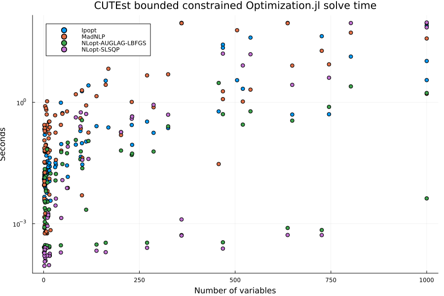
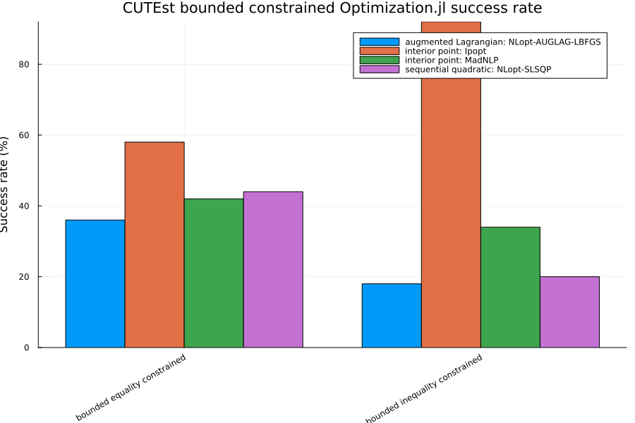
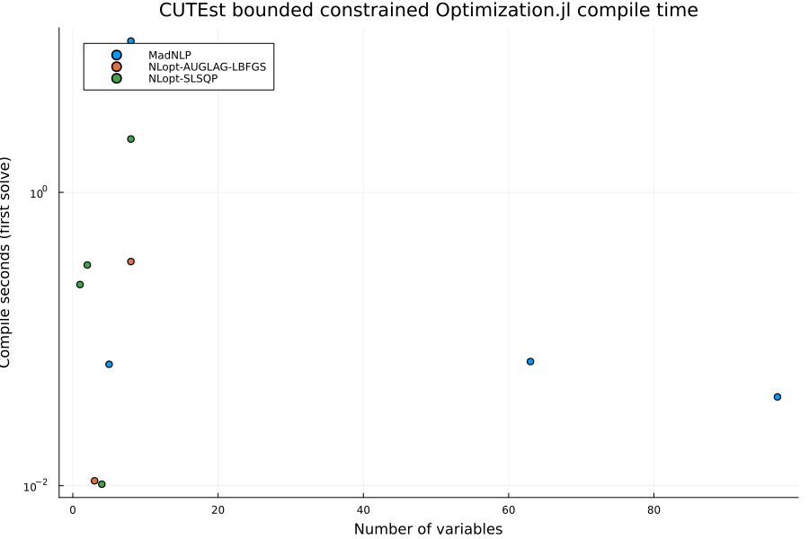
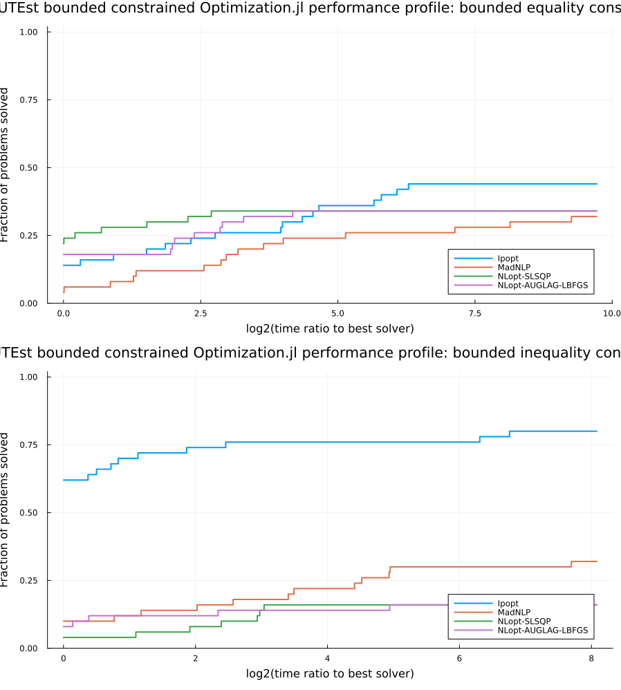
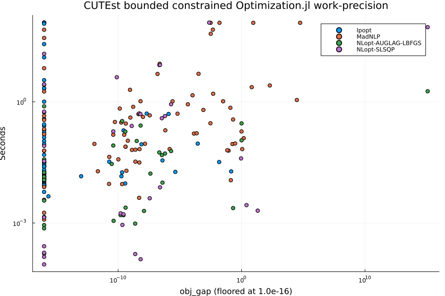

CUTEst Bounded Constrained Optimization.jl Benchmarks
This benchmark runs constrained problems from the CUTEst test set through the Optimization.jl interface using OptimizationNLPModels. Two candidate pools are used:
- equality constrained:
CUTEst.select_sif_problems(min_con = 1, only_equ_con = true) - inequality constrained:
CUTEst.select_sif_problems(min_con = 1, only_ineq_con = true)
min_con = 1 requires at least one general (linear or nonlinear) constraint, only_equ_con keeps problems whose constraints are all equalities, and only_ineq_con keeps problems with no equality constraints. The bounded page includes every problem with at least one variable bound, including problems that also have free variables. The companion CUTEst_unbounded page contains problems whose variables are all free. These categories are disjoint and cover the eligible equality and inequality pools.
All four CUTEst pages in this folder share the harness in cutest_benchmark_utils.jl, which defines the selection constants, the solver constructors, the run loop, and the summary and plotting helpers. The prose below describes the harness as it stands; refinements to the solver sets, solution-quality metrics, performance profiles, problem selection, and timing methodology are tracked in #1857.
Setup
ENV["GKSwstype"] = "100"
using CUTEst
using DataFrames
using Plots
using StatsPlots
using StatsBase: countmap
using Statistics
using Printf
include(joinpath(isdefined(Main, :WEAVE_ARGS) ? WEAVE_ARGS[:folder] : @__DIR__,
"cutest_benchmark_utils.jl"))plot_work_precision (generic function with 1 method)Problem selection
select_safe_problems sorts candidate names, filters the measured skip map and size limits, then selects up to MAX_PROBLEMS_PER_CATEGORY across the 1–10, 11–100, and 101–MAX_NVAR variable buckets. It samples each name-sorted bucket evenly, redistributing quotas when a bucket has fewer candidates. Size strata come from CUTEst's public selection filters. The selected and eligible counts are printed per bucket.
println("MAX_PROBLEMS_PER_CATEGORY = ", MAX_PROBLEMS_PER_CATEGORY)
println("MAX_NVAR = ", MAX_NVAR)
println("MAX_NCON = ", MAX_NCON)
println("SOLVE_MAXITERS = ", SOLVE_MAXITERS)
println("SOLVE_TIMEOUT_SECONDS = ", SOLVE_TIMEOUT_SECONDS)
println("KNOWN_BAD_PROBLEMS = ", join(sort(collect(keys(KNOWN_BAD_PROBLEMS))), ", "))
all_equality_candidates = collect(CUTEst.select_sif_problems(min_con = 1,
only_equ_con = true, max_var = MAX_NVAR, max_con = MAX_NCON))
bounded_equality_candidates = collect(CUTEst.select_sif_problems(min_con = 1,
only_equ_con = true, max_var = MAX_NVAR, max_con = MAX_NCON,
custom_filter = p -> p["variables"]["free"] < p["variables"]["number"]))
free_equality_candidates = collect(CUTEst.select_sif_problems(min_con = 1,
only_equ_con = true, only_free_var = true, max_var = MAX_NVAR, max_con = MAX_NCON))
assert_bounded_pool_coverage(all_equality_candidates, bounded_equality_candidates,
free_equality_candidates, "Equality")
all_inequality_candidates = collect(CUTEst.select_sif_problems(min_con = 1,
only_ineq_con = true, max_var = MAX_NVAR, max_con = MAX_NCON))
bounded_inequality_candidates = collect(CUTEst.select_sif_problems(min_con = 1,
only_ineq_con = true, max_var = MAX_NVAR, max_con = MAX_NCON,
custom_filter = p -> p["variables"]["free"] < p["variables"]["number"]))
free_inequality_candidates = collect(CUTEst.select_sif_problems(min_con = 1,
only_ineq_con = true, only_free_var = true, max_var = MAX_NVAR, max_con = MAX_NCON))
assert_bounded_pool_coverage(all_inequality_candidates, bounded_inequality_candidates,
free_inequality_candidates, "Inequality")
bounded_equality_problems = select_safe_problems(bounded_equality_candidates)
bounded_inequality_problems = select_safe_problems(bounded_inequality_candidates)
println("Selected bounded equality-constrained problems: ", length(bounded_equality_problems))
println(join(bounded_equality_problems, ", "))
println("Selected bounded inequality-constrained problems: ", length(bounded_inequality_problems))
println(join(bounded_inequality_problems, ", "))MAX_PROBLEMS_PER_CATEGORY = 50
MAX_NVAR = 1000
MAX_NCON = 1000
SOLVE_MAXITERS = 1000
SOLVE_TIMEOUT_SECONDS = 90.0
KNOWN_BAD_PROBLEMS =
Equality eligible candidates: all=350, bounded=156, free=194
Inequality eligible candidates: all=166, bounded=103, free=63
Selected 50 of 156 eligible problems (selected/eligible per bucket): 1-10 v
ars: 17/74, 11-100 vars: 17/44, 101-1000 vars: 16/38
Selected 50 of 103 eligible problems (selected/eligible per bucket): 1-10 v
ars: 30/83, 11-100 vars: 8/8, 101-1000 vars: 12/12
Selected bounded equality-constrained problems: 50
AIRCRFTA, HATFLDANE, HS111, HS41, HS60, HS80, KOEBHELBNE, LEVYMONE8, ODFITS
, PALMER1NE, PALMER3ANE, PALMER4ANE, PALMER5BNE, PALMER7ANE, PFIT2, SUPERSI
M, WEEDSNE, AVION2, CONCON, DALLASS, DECONVNE, DNIEPER, DUAL2, GOULDQP1, HI
MMELBJ, HS119, LEVYMONE, MCONCON, NYSTROM5C, PORTFL1, PORTFL4, ROBOT, SPANH
YD, WATER, ALJAZZAF, CHAIN, DIXCHLNV, DUAL3, EIGMAXC, EIGMINB, HIE1372D, KT
MODEL, QR3DBD, SMBANK, STEENBRB, STEENBRD, STEENBRG, TARGUS, ZAMB2-11, ZAMB
2-9
Selected bounded inequality-constrained problems: 50
AVGASA, BURKEHAN, CRESC4, EQC, HIMMELP3, HIMMELP6, HS103, HS106, HS15, HS17
, HS20, HS23, HS31, HS35, HS36, HS44, HS59, HS66, HS72, HS83, HS86, HS95, H
S98, LSQFIT, QC, S365, SIMPLLPA, STANCMIN, ZECEVIC2, ZY2, AIRPORT, DEMBO7,
HIMMELBI, HS116, HS117, HS118, KISSING2, OPTPRLOC, CLEUVEN7, HYDROELM, HYDR
OELS, LEUVEN7, PRIMAL1, PRIMAL2, PRIMAL3, PRIMALC1, PRIMALC2, PRIMALC5, PRI
MALC8, SINROSNBSolvers
CONSTRAINED_SOLVERS currently contains only Ipopt, run through OptimizationMOI. It is the only optimizer wired into the harness that accepts general equality and inequality constraints via Optimization.jl; the Optim.jl algorithms on the unconstrained page do not. Ipopt is configured with max_iter = SOLVE_MAXITERS, max_wall_time = SOLVE_TIMEOUT_SECONDS, tol = 1.0e-6, print_level = 0, and hessian_approximation = "limited-memory". The limited-memory setting is used because OptimizationNLPModels supplies the objective gradient and Hessian and the constraint values and Jacobian from the CUTEst model, but not the constraint Hessians needed for an exact Hessian of the Lagrangian. The same iteration and time limits are also passed to solve as maxiters and maxtime. Adding further constrained backends and an exact-Hessian Ipopt variant is item 1 of #1857.
Run
Each (problem, solver) pair is solved once by run_single_solve. A row records the return code as reported by Optimization.jl and a status of OK when solve returned, FAILED when it threw, or LOAD_FAILED when the CUTEst problem could not be constructed. The reported time is sol.stats.time when the solver provides a finite, non-negative value, and otherwise the wall-clock time measured around problem construction and solve together. run_benchmarks errors if a category yields no OK rows, so a broken environment fails the build instead of producing an empty page.
bounded_results = vcat(
run_benchmarks("bounded equality constrained", bounded_equality_problems,
CONSTRAINED_SOLVERS),
run_benchmarks("bounded inequality constrained", bounded_inequality_problems,
CONSTRAINED_SOLVERS),
)
display(bounded_results)Warming up solvers (JIT), results are not benchmarked:
Ipopt HS35
***************************************************************************
***
This program contains Ipopt, a library for large-scale nonlinear optimizati
on.
Ipopt is released as open source code under the Eclipse Public License (EP
L).
For more information visit https://github.com/coin-or/Ipopt
***************************************************************************
***
OK Success first 19.905s compile 19.884s clean 0.011s (total 22.877s)
MadNLP HS35 OK Success first 18.533s comp
ile 18.464s clean 0.064s (total 18.969s)
NLopt-SLSQP HS35 CUTEst solve skipped for HS35
with NLopt-SLSQP: constraint bounds are not of the cons(x) <= 0 / cons(x) =
= 0 form that OptimizationNLopt passes to NLopt
SKIPPED SKIPPED first 0.000s compile 0.000s clean 0.000s (total 0.262s)
NLopt-AUGLAG-LBFGS HS35 CUTEst solve skipped for HS35
with NLopt-AUGLAG-LBFGS: constraint bounds are not of the cons(x) <= 0 / co
ns(x) == 0 form that OptimizationNLopt passes to NLopt
SKIPPED SKIPPED first 0.000s compile 0.000s clean 0.000s (total 0.270s)
Running bounded equality constrained benchmarks
Problems: 50
Solvers: Ipopt, MadNLP, NLopt-SLSQP, NLopt-AUGLAG-LBFGS
Per-solve time cap: 90.0 s
Ipopt AIRCRFTA OK Success 0.006s (first 0.00
8s, compile 0.000s, decode 0.274s)
MadNLP AIRCRFTA OK Success 0.001s (first 10.7
63s, compile 10.761s, decode 0.266s)
NLopt-SLSQP AIRCRFTA OK Success 0.000s (first 2.33
5s, compile 2.310s, decode 0.273s)
NLopt-AUGLAG-LBFGS AIRCRFTA OK Success 0.001s (first 0.33
9s, compile 0.337s, decode 0.266s)
Ipopt HATFLDANE OK Success 0.008s (first 0.01
0s, compile 0.000s, decode 0.265s)
MadNLP HATFLDANE OK Success 0.002s (first 0.00
3s, compile 0.000s, decode 0.268s)
NLopt-SLSQP HATFLDANE OK Success 0.000s (first 0.00
0s, compile 0.000s, decode 0.265s)
NLopt-AUGLAG-LBFGS HATFLDANE OK Success 0.001s (first 0.00
2s, compile 0.000s, decode 0.257s)
Ipopt HS111 OK Success 0.035s (first 0.05
3s, compile 0.000s, decode 0.324s)
MadNLP HS111 OK MaxIters 0.071s (first 0.0
97s, compile 0.000s, decode 0.323s)
NLopt-SLSQP HS111 OK Success 0.001s (first 0.00
2s, compile 0.000s, decode 0.325s)
NLopt-AUGLAG-LBFGS HS111 OK Success 0.010s (first 0.01
1s, compile 0.000s, decode 0.322s)
Ipopt HS41 OK Success 0.020s (first 0.01
6s, compile 0.000s, decode 0.262s)
MadNLP HS41 OK Success 0.020s (first 0.02
1s, compile 0.000s, decode 0.259s)
NLopt-SLSQP HS41 OK Failure 0.000s (first 0.01
1s, compile 0.010s, decode 0.260s)
NLopt-AUGLAG-LBFGS HS41 OK Failure 0.000s (first 0.00
0s, compile 0.000s, decode 0.255s)
Ipopt HS60 OK Success 0.014s (first 0.01
6s, compile 0.000s, decode 0.275s)
MadNLP HS60 OK Success 0.060s (first 0.06
1s, compile 0.000s, decode 0.279s)
NLopt-SLSQP HS60 OK Success 0.000s (first 0.00
0s, compile 0.000s, decode 0.293s)
NLopt-AUGLAG-LBFGS HS60 OK Success 0.001s (first 0.00
1s, compile 0.000s, decode 0.286s)
Ipopt HS80 OK Success 0.009s (first 0.01
1s, compile 0.000s, decode 0.301s)
MadNLP HS80 OK Success 0.074s (first 0.14
9s, compile 0.067s, decode 0.290s)
NLopt-SLSQP HS80 OK Success 0.000s (first 0.00
0s, compile 0.000s, decode 0.298s)
NLopt-AUGLAG-LBFGS HS80 OK Success 0.002s (first 0.00
2s, compile 0.000s, decode 0.291s)
Ipopt KOEBHELBNE OK Failure 0.004s (first 0.00
5s, compile 0.000s, decode 0.278s)
MadNLP KOEBHELBNE OK Infeasible 0.001s (first 0
.001s, compile 0.000s, decode 0.272s)
NLopt-SLSQP KOEBHELBNE CUTEst solve skipped for KOEBH
ELBNE with NLopt-SLSQP: SLSQP supports at most nvar equality constraints
SKIPPED SKIPPED 0.000s (first 0.000s, compile 0.000s, decode 0.280s)
NLopt-AUGLAG-LBFGS KOEBHELBNE OK Failure 0.022s (first 0.10
2s, compile 0.011s, decode 0.277s)
Ipopt LEVYMONE8 OK Failure 0.004s (first 0.00
5s, compile 0.000s, decode 0.276s)
MadNLP LEVYMONE8 OK Infeasible 0.001s (first 0
.001s, compile 0.000s, decode 0.279s)
NLopt-SLSQP LEVYMONE8 CUTEst solve skipped for LEVYM
ONE8 with NLopt-SLSQP: SLSQP supports at most nvar equality constraints
SKIPPED SKIPPED 0.000s (first 0.000s, compile 0.000s, decode 0.274s)
NLopt-AUGLAG-LBFGS LEVYMONE8 OK Failure 0.001s (first 0.00
1s, compile 0.000s, decode 0.275s)
Ipopt ODFITS OK Success 0.018s (first 0.01
9s, compile 0.000s, decode 0.275s)
MadNLP ODFITS OK Success 0.006s (first 0.00
7s, compile 0.000s, decode 0.279s)
NLopt-SLSQP ODFITS OK Success 0.001s (first 0.00
1s, compile 0.000s, decode 0.268s)
NLopt-AUGLAG-LBFGS ODFITS OK Success 0.003s (first 0.00
4s, compile 0.000s, decode 0.270s)
Ipopt PALMER1NE OK Failure 0.004s (first 0.00
5s, compile 0.000s, decode 0.257s)
MadNLP PALMER1NE OK Infeasible 0.001s (first 0
.001s, compile 0.000s, decode 0.263s)
NLopt-SLSQP PALMER1NE CUTEst solve skipped for PALME
R1NE with NLopt-SLSQP: SLSQP supports at most nvar equality constraints
SKIPPED SKIPPED 0.000s (first 0.000s, compile 0.000s, decode 0.264s)
NLopt-AUGLAG-LBFGS PALMER1NE OK Failure 0.003s (first 0.00
4s, compile 0.000s, decode 0.261s)
Ipopt PALMER3ANE OK Failure 0.004s (first 0.00
5s, compile 0.000s, decode 0.263s)
MadNLP PALMER3ANE OK Infeasible 0.001s (first 0
.001s, compile 0.000s, decode 0.259s)
NLopt-SLSQP PALMER3ANE CUTEst solve skipped for PALME
R3ANE with NLopt-SLSQP: SLSQP supports at most nvar equality constraints
SKIPPED SKIPPED 0.000s (first 0.000s, compile 0.000s, decode 0.281s)
NLopt-AUGLAG-LBFGS PALMER3ANE OK Failure 0.007s (first 0.00
7s, compile 0.000s, decode 0.277s)
Ipopt PALMER4ANE OK Failure 0.004s (first 0.00
5s, compile 0.000s, decode 0.271s)
MadNLP PALMER4ANE OK Infeasible 0.001s (first 0
.001s, compile 0.000s, decode 0.266s)
NLopt-SLSQP PALMER4ANE CUTEst solve skipped for PALME
R4ANE with NLopt-SLSQP: SLSQP supports at most nvar equality constraints
SKIPPED SKIPPED 0.000s (first 0.000s, compile 0.000s, decode 0.260s)
NLopt-AUGLAG-LBFGS PALMER4ANE OK Failure 0.006s (first 0.00
7s, compile 0.000s, decode 0.269s)
Ipopt PALMER5BNE OK Failure 0.004s (first 0.00
5s, compile 0.000s, decode 0.266s)
MadNLP PALMER5BNE OK Infeasible 0.001s (first 0
.001s, compile 0.000s, decode 0.276s)
NLopt-SLSQP PALMER5BNE CUTEst solve skipped for PALME
R5BNE with NLopt-SLSQP: SLSQP supports at most nvar equality constraints
SKIPPED SKIPPED 0.000s (first 0.000s, compile 0.000s, decode 0.265s)
NLopt-AUGLAG-LBFGS PALMER5BNE OK MaxIters 0.068s (first 0.0
18s, compile 0.000s, decode 0.265s)
Ipopt PALMER7ANE OK Failure 0.004s (first 0.00
5s, compile 0.000s, decode 0.274s)
MadNLP PALMER7ANE OK Infeasible 0.001s (first 0
.001s, compile 0.000s, decode 0.271s)
NLopt-SLSQP PALMER7ANE CUTEst solve skipped for PALME
R7ANE with NLopt-SLSQP: SLSQP supports at most nvar equality constraints
SKIPPED SKIPPED 0.000s (first 0.000s, compile 0.000s, decode 0.275s)
NLopt-AUGLAG-LBFGS PALMER7ANE OK MaxIters 0.015s (first 0.0
16s, compile 0.000s, decode 0.272s)
Ipopt PFIT2 OK Infeasible 0.158s (first 0
.187s, compile 0.000s, decode 0.316s)
MadNLP PFIT2 OK MaxIters 0.069s (first 0.0
95s, compile 0.000s, decode 0.319s)
NLopt-SLSQP PFIT2 OK Failure 0.000s (first 0.00
1s, compile 0.000s, decode 0.318s)
NLopt-AUGLAG-LBFGS PFIT2 OK Success 0.014s (first 0.01
4s, compile 0.000s, decode 0.323s)
Ipopt SUPERSIM OK Success 0.005s (first 0.00
6s, compile 0.000s, decode 0.247s)
MadNLP SUPERSIM OK Success 0.001s (first 0.00
2s, compile 0.000s, decode 0.237s)
NLopt-SLSQP SUPERSIM OK Success 0.000s (first 0.00
0s, compile 0.000s, decode 0.244s)
NLopt-AUGLAG-LBFGS SUPERSIM OK Failure 0.001s (first 0.00
1s, compile 0.000s, decode 0.245s)
Ipopt WEEDSNE OK Failure 0.004s (first 0.00
4s, compile 0.000s, decode 0.273s)
MadNLP WEEDSNE OK Infeasible 0.001s (first 0
.001s, compile 0.000s, decode 0.272s)
NLopt-SLSQP WEEDSNE CUTEst solve skipped for WEEDS
NE with NLopt-SLSQP: SLSQP supports at most nvar equality constraints
SKIPPED SKIPPED 0.000s (first 0.000s, compile 0.000s, decode 0.270s)
NLopt-AUGLAG-LBFGS WEEDSNE OK Failure 0.002s (first 0.00
3s, compile 0.000s, decode 0.272s)
Ipopt AVION2 OK Failure 0.541s (first 0.57
3s, compile 0.000s, decode 0.367s)
MadNLP AVION2 OK MaxIters 0.520s (first 0.4
94s, compile 0.000s, decode 0.365s)
NLopt-SLSQP AVION2 OK Success 0.012s (first 0.01
3s, compile 0.000s, decode 0.370s)
NLopt-AUGLAG-LBFGS AVION2 OK MaxIters 0.030s (first 0.0
32s, compile 0.000s, decode 0.379s)
Ipopt CONCON OK Success 0.011s (first 0.01
8s, compile 0.000s, decode 0.277s)
MadNLP CONCON OK Success 0.005s (first 0.00
7s, compile 0.000s, decode 0.277s)
NLopt-SLSQP CONCON OK Failure 0.000s (first 0.00
0s, compile 0.000s, decode 0.276s)
NLopt-AUGLAG-LBFGS CONCON OK Failure 0.000s (first 0.00
0s, compile 0.000s, decode 0.274s)
Ipopt DALLASS OK Success 0.093s (first 0.10
6s, compile 0.000s, decode 0.275s)
MadNLP DALLASS OK Success 0.064s (first 0.07
2s, compile 0.000s, decode 0.281s)
NLopt-SLSQP DALLASS OK Success 0.001s (first 0.00
2s, compile 0.000s, decode 0.281s)
NLopt-AUGLAG-LBFGS DALLASS OK Success 0.059s (first 0.08
0s, compile 0.000s, decode 0.278s)
Ipopt DECONVNE OK Success 0.014s (first 0.01
6s, compile 0.000s, decode 0.284s)
MadNLP DECONVNE OK Success 0.008s (first 0.08
1s, compile 0.070s, decode 0.278s)
NLopt-SLSQP DECONVNE OK MaxIters 0.080s (first 0.1
75s, compile 0.000s, decode 0.273s)
NLopt-AUGLAG-LBFGS DECONVNE OK MaxIters 0.101s (first 0.1
50s, compile 0.000s, decode 0.288s)
Ipopt DNIEPER OK Success 0.028s (first 0.05
8s, compile 0.000s, decode 0.297s)
MadNLP DNIEPER OK MaxIters 0.595s (first 0.6
23s, compile 0.000s, decode 0.292s)
NLopt-SLSQP DNIEPER OK Success 0.008s (first 0.00
8s, compile 0.000s, decode 0.295s)
NLopt-AUGLAG-LBFGS DNIEPER OK Success 0.055s (first 0.03
9s, compile 0.000s, decode 0.293s)
Ipopt DUAL2 OK Success 0.195s (first 0.22
0s, compile 0.000s, decode 0.344s)
MadNLP DUAL2 OK Infeasible 0.405s (first 0
.442s, compile 0.000s, decode 0.343s)
NLopt-SLSQP DUAL2 OK Success 0.253s (first 0.27
2s, compile 0.000s, decode 0.343s)
NLopt-AUGLAG-LBFGS DUAL2 OK Success 0.039s (first 0.05
5s, compile 0.000s, decode 0.348s)
Ipopt GOULDQP1 OK Success 0.028s (first 0.03
7s, compile 0.000s, decode 0.267s)
MadNLP GOULDQP1 OK Success 0.038s (first 0.05
6s, compile 0.000s, decode 0.268s)
NLopt-SLSQP GOULDQP1 OK Success 0.004s (first 0.03
5s, compile 0.000s, decode 0.264s)
NLopt-AUGLAG-LBFGS GOULDQP1 OK Success 0.017s (first 0.01
9s, compile 0.000s, decode 0.268s)
Ipopt HIMMELBJ OK Failure 0.977s (first 1.03
2s, compile 0.000s, decode 0.344s)
MadNLP HIMMELBJ OK MaxIters 0.277s (first 0.3
05s, compile 0.000s, decode 0.335s)
NLopt-SLSQP HIMMELBJ OK Failure 0.000s (first 0.00
1s, compile 0.000s, decode 0.337s)
NLopt-AUGLAG-LBFGS HIMMELBJ OK Failure 0.000s (first 0.00
0s, compile 0.000s, decode 0.343s)
Ipopt HS119 OK Success 0.026s (first 0.03
2s, compile 0.000s, decode 0.260s)
MadNLP HS119 OK Success 0.065s (first 0.09
2s, compile 0.000s, decode 0.274s)
NLopt-SLSQP HS119 OK Failure 0.000s (first 0.00
0s, compile 0.000s, decode 0.279s)
NLopt-AUGLAG-LBFGS HS119 OK Failure 0.000s (first 0.00
0s, compile 0.000s, decode 0.281s)
Ipopt LEVYMONE OK Failure 0.039s (first 0.04
1s, compile 0.000s, decode 0.275s)
MadNLP LEVYMONE OK Infeasible 0.005s (first 0
.005s, compile 0.000s, decode 0.284s)
NLopt-SLSQP LEVYMONE CUTEst solve skipped for LEVYM
ONE with NLopt-SLSQP: SLSQP supports at most nvar equality constraints
SKIPPED SKIPPED 0.000s (first 0.000s, compile 0.000s, decode 0.282s)
NLopt-AUGLAG-LBFGS LEVYMONE OK Failure 0.361s (first 0.02
2s, compile 0.000s, decode 0.287s)
Ipopt MCONCON OK Success 0.011s (first 0.01
3s, compile 0.000s, decode 0.282s)
MadNLP MCONCON OK Success 0.013s (first 0.01
4s, compile 0.000s, decode 0.279s)
NLopt-SLSQP MCONCON OK Failure 0.000s (first 0.00
0s, compile 0.000s, decode 0.274s)
NLopt-AUGLAG-LBFGS MCONCON OK Failure 0.000s (first 0.00
0s, compile 0.000s, decode 0.278s)
Ipopt NYSTROM5C OK Failure 0.004s (first 0.00
5s, compile 0.000s, decode 0.359s)
MadNLP NYSTROM5C OK Infeasible 0.001s (first 0
.001s, compile 0.000s, decode 0.371s)
NLopt-SLSQP NYSTROM5C CUTEst solve skipped for NYSTR
OM5C with NLopt-SLSQP: SLSQP supports at most nvar equality constraints
SKIPPED SKIPPED 0.000s (first 0.000s, compile 0.000s, decode 0.360s)
NLopt-AUGLAG-LBFGS NYSTROM5C OK Success 0.017s (first 0.01
8s, compile 0.000s, decode 0.360s)
Ipopt PORTFL1 OK Success 0.024s (first 0.02
6s, compile 0.000s, decode 0.263s)
MadNLP PORTFL1 OK Success 0.216s (first 0.09
4s, compile 0.000s, decode 0.265s)
NLopt-SLSQP PORTFL1 OK Success 0.002s (first 0.00
2s, compile 0.000s, decode 0.254s)
NLopt-AUGLAG-LBFGS PORTFL1 OK Success 0.002s (first 0.00
2s, compile 0.000s, decode 0.262s)
Ipopt PORTFL4 OK Success 0.025s (first 0.02
8s, compile 0.000s, decode 0.261s)
MadNLP PORTFL4 OK Success 0.057s (first 0.08
1s, compile 0.000s, decode 0.260s)
NLopt-SLSQP PORTFL4 OK Success 0.002s (first 0.00
2s, compile 0.000s, decode 0.257s)
NLopt-AUGLAG-LBFGS PORTFL4 OK Success 0.002s (first 0.00
2s, compile 0.000s, decode 0.256s)
Ipopt ROBOT OK Success 0.030s (first 0.03
9s, compile 0.000s, decode 0.275s)
MadNLP ROBOT OK MaxIters 0.332s (first 0.3
55s, compile 0.000s, decode 0.270s)
NLopt-SLSQP ROBOT OK Success 0.000s (first 0.00
0s, compile 0.000s, decode 0.275s)
NLopt-AUGLAG-LBFGS ROBOT OK Success 0.002s (first 0.00
3s, compile 0.000s, decode 0.277s)
Ipopt SPANHYD OK Success 0.045s (first 0.06
8s, compile 0.000s, decode 0.464s)
MadNLP SPANHYD OK Infeasible 0.226s (first 0
.245s, compile 0.040s, decode 0.474s)
NLopt-SLSQP SPANHYD OK Success 0.564s (first 0.56
4s, compile 0.000s, decode 0.483s)
NLopt-AUGLAG-LBFGS SPANHYD OK MaxIters 0.061s (first 0.1
00s, compile 0.000s, decode 0.476s)
Ipopt WATER OK Success 0.032s (first 0.04
8s, compile 0.000s, decode 0.261s)
MadNLP WATER OK Infeasible 0.178s (first 0
.201s, compile 0.000s, decode 0.259s)
NLopt-SLSQP WATER OK Success 0.003s (first 0.00
3s, compile 0.000s, decode 0.264s)
NLopt-AUGLAG-LBFGS WATER OK Success 0.012s (first 0.01
2s, compile 0.000s, decode 0.273s)
Ipopt ALJAZZAF OK MaxIters 3.535s (first 3.6
15s, compile 0.000s, decode 0.298s)
MadNLP ALJAZZAF OK MaxIters 1.623s (first 1.6
97s, compile 0.000s, decode 0.296s)
NLopt-SLSQP ALJAZZAF [rerun skipped: first run end
ed with MaxTime] OK MaxTime 93.533s (first 93.533s, compile 0.000s, decode
0.305s)
NLopt-AUGLAG-LBFGS ALJAZZAF OK Failure 0.004s (first 0.01
4s, compile 0.000s, decode 0.306s)
Ipopt CHAIN OK Success 13.483s (first 14.
056s, compile 0.000s, decode 0.294s)
MadNLP CHAIN OK MaxIters 52.475s (first 53
.823s, compile 0.000s, decode 0.286s)
NLopt-SLSQP CHAIN [rerun skipped: first run end
ed with MaxTime] OK MaxTime 90.760s (first 90.760s, compile 0.000s, decode
0.293s)
NLopt-AUGLAG-LBFGS CHAIN OK MaxIters 2.471s (first 2.8
82s, compile 0.000s, decode 0.304s)
Ipopt DIXCHLNV OK Success 10.485s (first 10.
735s, compile 0.000s, decode 1.767s)
MadNLP DIXCHLNV OK Success 37.730s (first 38.
019s, compile 0.000s, decode 1.718s)
NLopt-SLSQP DIXCHLNV OK Failure 71.010s (first 71.
014s, compile 0.000s, decode 1.766s)
NLopt-AUGLAG-LBFGS DIXCHLNV OK Failure 1.696s (first 2.75
4s, compile 0.000s, decode 1.790s)
Ipopt DUAL3 OK Success 0.107s (first 0.12
6s, compile 0.000s, decode 0.366s)
MadNLP DUAL3 OK Success 0.837s (first 0.49
6s, compile 0.000s, decode 0.362s)
NLopt-SLSQP DUAL3 OK Success 0.516s (first 0.54
2s, compile 0.000s, decode 0.363s)
NLopt-AUGLAG-LBFGS DUAL3 OK Failure 0.002s (first 0.00
3s, compile 0.000s, decode 0.358s)
Ipopt EIGMAXC OK Success 0.183s (first 0.14
2s, compile 0.000s, decode 0.546s)
MadNLP EIGMAXC OK Success 0.155s (first 0.17
3s, compile 0.000s, decode 0.555s)
NLopt-SLSQP EIGMAXC OK Success 0.184s (first 0.20
9s, compile 0.000s, decode 0.548s)
NLopt-AUGLAG-LBFGS EIGMAXC OK Success 0.064s (first 0.23
7s, compile 0.000s, decode 0.547s)
Ipopt EIGMINB OK Success 0.029s (first 0.03
4s, compile 0.000s, decode 0.341s)
MadNLP EIGMINB OK Success 0.042s (first 0.06
0s, compile 0.000s, decode 0.341s)
NLopt-SLSQP EIGMINB OK Success 0.038s (first 0.05
6s, compile 0.000s, decode 0.342s)
NLopt-AUGLAG-LBFGS EIGMINB OK Success 0.023s (first 0.06
4s, compile 0.000s, decode 0.333s)
Ipopt HIE1372D [rerun skipped: first run end
ed with MaxTime] OK MaxTime 91.229s (first 91.229s, compile 0.000s, decode
0.299s)
MadNLP HIE1372D [rerun skipped: first run end
ed with MaxTime] OK MaxTime 90.014s (first 90.014s, compile 0.000s, decode
0.301s)
NLopt-SLSQP HIE1372D OK Failure 0.001s (first 0.00
1s, compile 0.000s, decode 0.294s)
NLopt-AUGLAG-LBFGS HIE1372D OK Failure 0.001s (first 0.02
6s, compile 0.000s, decode 0.288s)
Ipopt KTMODEL OK Failure 42.981s (first 43.
185s, compile 0.000s, decode 0.350s)
MadNLP KTMODEL OK Infeasible 18.734s (first
20.249s, compile 0.000s, decode 0.338s)
NLopt-SLSQP KTMODEL OK Failure 0.001s (first 0.00
1s, compile 0.000s, decode 0.342s)
NLopt-AUGLAG-LBFGS KTMODEL OK Failure 0.001s (first 0.00
1s, compile 0.000s, decode 0.345s)
Ipopt QR3DBD OK Failure 0.595s (first 0.95
1s, compile 0.000s, decode 0.383s)
MadNLP QR3DBD OK Infeasible 0.030s (first 0
.031s, compile 0.000s, decode 0.376s)
NLopt-SLSQP QR3DBD CUTEst solve skipped for QR3DB
D with NLopt-SLSQP: SLSQP supports at most nvar equality constraints
SKIPPED SKIPPED 0.000s (first 0.000s, compile 0.000s, decode 0.383s)
NLopt-AUGLAG-LBFGS QR3DBD OK MaxIters 3.003s (first 3.2
07s, compile 0.000s, decode 0.382s)
Ipopt SMBANK OK Failure 2.612s (first 2.56
2s, compile 0.000s, decode 0.271s)
MadNLP SMBANK OK Success 0.179s (first 0.20
5s, compile 0.000s, decode 0.284s)
NLopt-SLSQP SMBANK OK Success 0.040s (first 0.05
8s, compile 0.000s, decode 0.282s)
NLopt-AUGLAG-LBFGS SMBANK OK MaxIters 0.111s (first 0.1
18s, compile 0.000s, decode 0.278s)
Ipopt STEENBRB OK MaxIters 26.561s (first 26
.567s, compile 0.000s, decode 0.298s)
MadNLP STEENBRB OK Success 1.198s (first 1.22
7s, compile 0.000s, decode 0.301s)
NLopt-SLSQP STEENBRB OK Failure 15.952s (first 15.
969s, compile 0.000s, decode 0.296s)
NLopt-AUGLAG-LBFGS STEENBRB OK MaxIters 0.508s (first 0.6
73s, compile 0.000s, decode 0.304s)
Ipopt STEENBRD OK Success 22.250s (first 22.
134s, compile 0.000s, decode 0.306s)
MadNLP STEENBRD OK Infeasible 1.867s (first 2
.009s, compile 0.000s, decode 0.308s)
NLopt-SLSQP STEENBRD OK Failure 0.000s (first 0.00
1s, compile 0.000s, decode 0.306s)
NLopt-AUGLAG-LBFGS STEENBRD OK Failure 0.000s (first 0.00
0s, compile 0.000s, decode 0.297s)
Ipopt STEENBRG OK MaxIters 39.712s (first 39
.719s, compile 0.000s, decode 0.302s)
MadNLP STEENBRG OK Infeasible 2.054s (first 1
.890s, compile 0.000s, decode 0.311s)
NLopt-SLSQP STEENBRG OK Success 15.370s (first 15.
397s, compile 0.000s, decode 0.300s)
NLopt-AUGLAG-LBFGS STEENBRG OK MaxIters 0.598s (first 0.7
10s, compile 0.000s, decode 0.307s)
Ipopt TARGUS OK MaxIters 3.421s (first 3.4
54s, compile 0.000s, decode 0.278s)
MadNLP TARGUS OK MaxIters 2.705s (first 2.6
02s, compile 0.000s, decode 0.272s)
NLopt-SLSQP TARGUS OK Failure 0.000s (first 0.00
0s, compile 0.000s, decode 0.268s)
NLopt-AUGLAG-LBFGS TARGUS OK Failure 0.000s (first 0.00
0s, compile 0.000s, decode 0.268s)
Ipopt ZAMB2-11 OK Success 0.333s (first 0.39
1s, compile 0.000s, decode 0.300s)
MadNLP ZAMB2-11 OK MaxIters 4.621s (first 4.8
34s, compile 0.000s, decode 0.298s)
NLopt-SLSQP ZAMB2-11 OK Failure 0.000s (first 0.00
1s, compile 0.000s, decode 0.309s)
NLopt-AUGLAG-LBFGS ZAMB2-11 OK Failure 0.000s (first 0.00
1s, compile 0.000s, decode 0.302s)
Ipopt ZAMB2-9 OK Success 0.257s (first 0.33
6s, compile 0.000s, decode 0.300s)
MadNLP ZAMB2-9 OK MaxIters 1.418s (first 1.4
45s, compile 0.000s, decode 0.306s)
NLopt-SLSQP ZAMB2-9 OK Failure 0.000s (first 0.00
0s, compile 0.000s, decode 0.305s)
NLopt-AUGLAG-LBFGS ZAMB2-9 OK Failure 0.000s (first 0.00
0s, compile 0.000s, decode 0.291s)
bounded equality constrained: 189/189 attempted rows completed (100.0%);
11 skipped; status: OK=189, SKIPPED=11
Warming up solvers (JIT), results are not benchmarked:
Ipopt HS35 OK Success first 0.018s compi
le 0.000s clean 0.015s (total 0.300s)
MadNLP HS35 OK Success first 0.088s compi
le 0.000s clean 0.064s (total 0.419s)
NLopt-SLSQP HS35 CUTEst solve skipped for HS35
with NLopt-SLSQP: constraint bounds are not of the cons(x) <= 0 / cons(x) =
= 0 form that OptimizationNLopt passes to NLopt
SKIPPED SKIPPED first 0.000s compile 0.000s clean 0.000s (total 0.276s)
NLopt-AUGLAG-LBFGS HS35 CUTEst solve skipped for HS35
with NLopt-AUGLAG-LBFGS: constraint bounds are not of the cons(x) <= 0 / co
ns(x) == 0 form that OptimizationNLopt passes to NLopt
SKIPPED SKIPPED first 0.000s compile 0.000s clean 0.000s (total 0.266s)
Running bounded inequality constrained benchmarks
Problems: 50
Solvers: Ipopt, MadNLP, NLopt-SLSQP, NLopt-AUGLAG-LBFGS
Per-solve time cap: 90.0 s
Ipopt AVGASA OK Success 0.016s (first 0.01
8s, compile 0.000s, decode 0.267s)
MadNLP AVGASA OK Success 0.501s (first 0.45
0s, compile 0.000s, decode 0.264s)
NLopt-SLSQP AVGASA CUTEst solve skipped for AVGAS
A with NLopt-SLSQP: constraint bounds are not of the cons(x) <= 0 / cons(x)
== 0 form that OptimizationNLopt passes to NLopt
SKIPPED SKIPPED 0.000s (first 0.000s, compile 0.000s, decode 0.279s)
NLopt-AUGLAG-LBFGS AVGASA CUTEst solve skipped for AVGAS
A with NLopt-AUGLAG-LBFGS: constraint bounds are not of the cons(x) <= 0 /
cons(x) == 0 form that OptimizationNLopt passes to NLopt
SKIPPED SKIPPED 0.000s (first 0.000s, compile 0.000s, decode 0.276s)
Ipopt BURKEHAN OK Infeasible 0.013s (first 0
.015s, compile 0.000s, decode 0.255s)
MadNLP BURKEHAN OK Infeasible 0.009s (first 0
.010s, compile 0.000s, decode 0.259s)
NLopt-SLSQP BURKEHAN OK Failure 0.000s (first 0.23
6s, compile 0.235s, decode 0.265s)
NLopt-AUGLAG-LBFGS BURKEHAN OK Failure 0.000s (first 0.00
0s, compile 0.000s, decode 0.259s)
Ipopt CRESC4 OK Success 0.062s (first 0.08
8s, compile 0.000s, decode 0.408s)
MadNLP CRESC4 OK MaxIters 0.090s (first 0.1
16s, compile 0.000s, decode 0.411s)
NLopt-SLSQP CRESC4 CUTEst solve skipped for CRESC
4 with NLopt-SLSQP: constraint bounds are not of the cons(x) <= 0 / cons(x)
== 0 form that OptimizationNLopt passes to NLopt
SKIPPED SKIPPED 0.000s (first 0.000s, compile 0.000s, decode 0.399s)
NLopt-AUGLAG-LBFGS CRESC4 CUTEst solve skipped for CRESC
4 with NLopt-AUGLAG-LBFGS: constraint bounds are not of the cons(x) <= 0 /
cons(x) == 0 form that OptimizationNLopt passes to NLopt
SKIPPED SKIPPED 0.000s (first 0.000s, compile 0.000s, decode 0.412s)
Ipopt EQC OK Success 0.020s (first 0.02
1s, compile 0.000s, decode 0.313s)
MadNLP EQC OK Infeasible 0.276s (first 0
.317s, compile 0.000s, decode 0.310s)
NLopt-SLSQP EQC OK Failure 0.000s (first 0.00
0s, compile 0.000s, decode 0.312s)
NLopt-AUGLAG-LBFGS EQC OK Failure 0.000s (first 0.00
0s, compile 0.000s, decode 0.301s)
Ipopt HIMMELP3 OK Success 0.014s (first 0.01
6s, compile 0.000s, decode 0.301s)
MadNLP HIMMELP3 OK Success 0.004s (first 0.00
4s, compile 0.000s, decode 0.301s)
NLopt-SLSQP HIMMELP3 CUTEst solve skipped for HIMME
LP3 with NLopt-SLSQP: constraint bounds are not of the cons(x) <= 0 / cons(
x) == 0 form that OptimizationNLopt passes to NLopt
SKIPPED SKIPPED 0.000s (first 0.000s, compile 0.000s, decode 0.307s)
NLopt-AUGLAG-LBFGS HIMMELP3 CUTEst solve skipped for HIMME
LP3 with NLopt-AUGLAG-LBFGS: constraint bounds are not of the cons(x) <= 0
/ cons(x) == 0 form that OptimizationNLopt passes to NLopt
SKIPPED SKIPPED 0.000s (first 0.000s, compile 0.000s, decode 0.296s)
Ipopt HIMMELP6 OK Success 0.016s (first 0.01
8s, compile 0.000s, decode 0.296s)
MadNLP HIMMELP6 OK Success 0.009s (first 0.01
0s, compile 0.000s, decode 0.306s)
NLopt-SLSQP HIMMELP6 CUTEst solve skipped for HIMME
LP6 with NLopt-SLSQP: constraint bounds are not of the cons(x) <= 0 / cons(
x) == 0 form that OptimizationNLopt passes to NLopt
SKIPPED SKIPPED 0.000s (first 0.000s, compile 0.000s, decode 0.293s)
NLopt-AUGLAG-LBFGS HIMMELP6 CUTEst solve skipped for HIMME
LP6 with NLopt-AUGLAG-LBFGS: constraint bounds are not of the cons(x) <= 0
/ cons(x) == 0 form that OptimizationNLopt passes to NLopt
SKIPPED SKIPPED 0.000s (first 0.000s, compile 0.000s, decode 0.294s)
Ipopt HS103 OK Success 0.048s (first 0.07
0s, compile 0.000s, decode 0.341s)
MadNLP HS103 OK MaxIters 0.650s (first 0.7
01s, compile 0.000s, decode 0.337s)
NLopt-SLSQP HS103 CUTEst solve skipped for HS103
with NLopt-SLSQP: constraint bounds are not of the cons(x) <= 0 / cons(x)
== 0 form that OptimizationNLopt passes to NLopt
SKIPPED SKIPPED 0.000s (first 0.000s, compile 0.000s, decode 0.338s)
NLopt-AUGLAG-LBFGS HS103 CUTEst solve skipped for HS103
with NLopt-AUGLAG-LBFGS: constraint bounds are not of the cons(x) <= 0 / c
ons(x) == 0 form that OptimizationNLopt passes to NLopt
SKIPPED SKIPPED 0.000s (first 0.000s, compile 0.000s, decode 0.326s)
Ipopt HS106 OK Success 0.033s (first 0.04
7s, compile 0.000s, decode 0.262s)
MadNLP HS106 OK MaxIters 0.072s (first 0.0
99s, compile 0.000s, decode 0.278s)
NLopt-SLSQP HS106 CUTEst solve skipped for HS106
with NLopt-SLSQP: constraint bounds are not of the cons(x) <= 0 / cons(x)
== 0 form that OptimizationNLopt passes to NLopt
SKIPPED SKIPPED 0.000s (first 0.000s, compile 0.000s, decode 0.270s)
NLopt-AUGLAG-LBFGS HS106 CUTEst solve skipped for HS106
with NLopt-AUGLAG-LBFGS: constraint bounds are not of the cons(x) <= 0 / c
ons(x) == 0 form that OptimizationNLopt passes to NLopt
SKIPPED SKIPPED 0.000s (first 0.000s, compile 0.000s, decode 0.267s)
Ipopt HS15 OK Success 0.012s (first 0.01
4s, compile 0.000s, decode 0.272s)
MadNLP HS15 OK Success 0.074s (first 0.10
0s, compile 0.000s, decode 0.276s)
NLopt-SLSQP HS15 CUTEst solve skipped for HS15
with NLopt-SLSQP: constraint bounds are not of the cons(x) <= 0 / cons(x) =
= 0 form that OptimizationNLopt passes to NLopt
SKIPPED SKIPPED 0.000s (first 0.000s, compile 0.000s, decode 0.279s)
NLopt-AUGLAG-LBFGS HS15 CUTEst solve skipped for HS15
with NLopt-AUGLAG-LBFGS: constraint bounds are not of the cons(x) <= 0 / co
ns(x) == 0 form that OptimizationNLopt passes to NLopt
SKIPPED SKIPPED 0.000s (first 0.000s, compile 0.000s, decode 0.274s)
Ipopt HS17 OK Success 0.019s (first 0.02
0s, compile 0.000s, decode 0.269s)
MadNLP HS17 OK Success 0.216s (first 0.18
5s, compile 0.000s, decode 0.275s)
NLopt-SLSQP HS17 CUTEst solve skipped for HS17
with NLopt-SLSQP: constraint bounds are not of the cons(x) <= 0 / cons(x) =
= 0 form that OptimizationNLopt passes to NLopt
SKIPPED SKIPPED 0.000s (first 0.000s, compile 0.000s, decode 0.279s)
NLopt-AUGLAG-LBFGS HS17 CUTEst solve skipped for HS17
with NLopt-AUGLAG-LBFGS: constraint bounds are not of the cons(x) <= 0 / co
ns(x) == 0 form that OptimizationNLopt passes to NLopt
SKIPPED SKIPPED 0.000s (first 0.000s, compile 0.000s, decode 0.271s)
Ipopt HS20 OK Success 0.009s (first 0.01
1s, compile 0.000s, decode 0.263s)
MadNLP HS20 OK Success 0.268s (first 0.29
8s, compile 0.000s, decode 0.283s)
NLopt-SLSQP HS20 CUTEst solve skipped for HS20
with NLopt-SLSQP: constraint bounds are not of the cons(x) <= 0 / cons(x) =
= 0 form that OptimizationNLopt passes to NLopt
SKIPPED SKIPPED 0.000s (first 0.000s, compile 0.000s, decode 0.272s)
NLopt-AUGLAG-LBFGS HS20 CUTEst solve skipped for HS20
with NLopt-AUGLAG-LBFGS: constraint bounds are not of the cons(x) <= 0 / co
ns(x) == 0 form that OptimizationNLopt passes to NLopt
SKIPPED SKIPPED 0.000s (first 0.000s, compile 0.000s, decode 0.272s)
Ipopt HS23 OK Success 0.009s (first 0.01
1s, compile 0.000s, decode 0.277s)
MadNLP HS23 OK MaxIters 0.276s (first 0.3
05s, compile 0.000s, decode 0.265s)
NLopt-SLSQP HS23 CUTEst solve skipped for HS23
with NLopt-SLSQP: constraint bounds are not of the cons(x) <= 0 / cons(x) =
= 0 form that OptimizationNLopt passes to NLopt
SKIPPED SKIPPED 0.000s (first 0.000s, compile 0.000s, decode 0.262s)
NLopt-AUGLAG-LBFGS HS23 CUTEst solve skipped for HS23
with NLopt-AUGLAG-LBFGS: constraint bounds are not of the cons(x) <= 0 / co
ns(x) == 0 form that OptimizationNLopt passes to NLopt
SKIPPED SKIPPED 0.000s (first 0.000s, compile 0.000s, decode 0.261s)
Ipopt HS31 OK Success 0.014s (first 0.01
6s, compile 0.000s, decode 0.269s)
MadNLP HS31 OK MaxIters 0.229s (first 0.2
89s, compile 0.000s, decode 0.266s)
NLopt-SLSQP HS31 CUTEst solve skipped for HS31
with NLopt-SLSQP: constraint bounds are not of the cons(x) <= 0 / cons(x) =
= 0 form that OptimizationNLopt passes to NLopt
SKIPPED SKIPPED 0.000s (first 0.000s, compile 0.000s, decode 0.277s)
NLopt-AUGLAG-LBFGS HS31 CUTEst solve skipped for HS31
with NLopt-AUGLAG-LBFGS: constraint bounds are not of the cons(x) <= 0 / co
ns(x) == 0 form that OptimizationNLopt passes to NLopt
SKIPPED SKIPPED 0.000s (first 0.000s, compile 0.000s, decode 0.266s)
Ipopt HS35 OK Success 0.015s (first 0.01
7s, compile 0.000s, decode 0.270s)
MadNLP HS35 OK Success 0.061s (first 0.08
8s, compile 0.000s, decode 0.273s)
NLopt-SLSQP HS35 CUTEst solve skipped for HS35
with NLopt-SLSQP: constraint bounds are not of the cons(x) <= 0 / cons(x) =
= 0 form that OptimizationNLopt passes to NLopt
SKIPPED SKIPPED 0.000s (first 0.000s, compile 0.000s, decode 0.266s)
NLopt-AUGLAG-LBFGS HS35 CUTEst solve skipped for HS35
with NLopt-AUGLAG-LBFGS: constraint bounds are not of the cons(x) <= 0 / co
ns(x) == 0 form that OptimizationNLopt passes to NLopt
SKIPPED SKIPPED 0.000s (first 0.000s, compile 0.000s, decode 0.276s)
Ipopt HS36 OK Success 0.011s (first 0.01
2s, compile 0.000s, decode 0.262s)
MadNLP HS36 OK Success 0.018s (first 0.01
9s, compile 0.000s, decode 0.260s)
NLopt-SLSQP HS36 CUTEst solve skipped for HS36
with NLopt-SLSQP: constraint bounds are not of the cons(x) <= 0 / cons(x) =
= 0 form that OptimizationNLopt passes to NLopt
SKIPPED SKIPPED 0.000s (first 0.000s, compile 0.000s, decode 0.266s)
NLopt-AUGLAG-LBFGS HS36 CUTEst solve skipped for HS36
with NLopt-AUGLAG-LBFGS: constraint bounds are not of the cons(x) <= 0 / co
ns(x) == 0 form that OptimizationNLopt passes to NLopt
SKIPPED SKIPPED 0.000s (first 0.000s, compile 0.000s, decode 0.257s)
Ipopt HS44 OK Success 0.017s (first 0.01
8s, compile 0.000s, decode 0.269s)
MadNLP HS44 OK MaxIters 0.799s (first 0.8
34s, compile 0.000s, decode 0.266s)
NLopt-SLSQP HS44 CUTEst solve skipped for HS44
with NLopt-SLSQP: constraint bounds are not of the cons(x) <= 0 / cons(x) =
= 0 form that OptimizationNLopt passes to NLopt
SKIPPED SKIPPED 0.000s (first 0.000s, compile 0.000s, decode 0.268s)
NLopt-AUGLAG-LBFGS HS44 CUTEst solve skipped for HS44
with NLopt-AUGLAG-LBFGS: constraint bounds are not of the cons(x) <= 0 / co
ns(x) == 0 form that OptimizationNLopt passes to NLopt
SKIPPED SKIPPED 0.000s (first 0.000s, compile 0.000s, decode 0.268s)
Ipopt HS59 OK Success 0.014s (first 0.01
6s, compile 0.000s, decode 0.295s)
MadNLP HS59 OK Success 0.011s (first 0.01
2s, compile 0.000s, decode 0.297s)
NLopt-SLSQP HS59 CUTEst solve skipped for HS59
with NLopt-SLSQP: constraint bounds are not of the cons(x) <= 0 / cons(x) =
= 0 form that OptimizationNLopt passes to NLopt
SKIPPED SKIPPED 0.000s (first 0.000s, compile 0.000s, decode 0.293s)
NLopt-AUGLAG-LBFGS HS59 CUTEst solve skipped for HS59
with NLopt-AUGLAG-LBFGS: constraint bounds are not of the cons(x) <= 0 / co
ns(x) == 0 form that OptimizationNLopt passes to NLopt
SKIPPED SKIPPED 0.000s (first 0.000s, compile 0.000s, decode 0.292s)
Ipopt HS66 OK Success 0.014s (first 0.01
5s, compile 0.000s, decode 0.274s)
MadNLP HS66 OK Success 0.032s (first 0.04
1s, compile 0.000s, decode 0.276s)
NLopt-SLSQP HS66 CUTEst solve skipped for HS66
with NLopt-SLSQP: constraint bounds are not of the cons(x) <= 0 / cons(x) =
= 0 form that OptimizationNLopt passes to NLopt
SKIPPED SKIPPED 0.000s (first 0.000s, compile 0.000s, decode 0.266s)
NLopt-AUGLAG-LBFGS HS66 CUTEst solve skipped for HS66
with NLopt-AUGLAG-LBFGS: constraint bounds are not of the cons(x) <= 0 / co
ns(x) == 0 form that OptimizationNLopt passes to NLopt
SKIPPED SKIPPED 0.000s (first 0.000s, compile 0.000s, decode 0.275s)
Ipopt HS72 OK Success 0.018s (first 0.01
9s, compile 0.000s, decode 0.264s)
MadNLP HS72 OK MaxIters 0.063s (first 0.0
89s, compile 0.000s, decode 0.270s)
NLopt-SLSQP HS72 CUTEst solve skipped for HS72
with NLopt-SLSQP: constraint bounds are not of the cons(x) <= 0 / cons(x) =
= 0 form that OptimizationNLopt passes to NLopt
SKIPPED SKIPPED 0.000s (first 0.000s, compile 0.000s, decode 0.257s)
NLopt-AUGLAG-LBFGS HS72 CUTEst solve skipped for HS72
with NLopt-AUGLAG-LBFGS: constraint bounds are not of the cons(x) <= 0 / co
ns(x) == 0 form that OptimizationNLopt passes to NLopt
SKIPPED SKIPPED 0.000s (first 0.000s, compile 0.000s, decode 0.262s)
Ipopt HS83 OK Success 0.012s (first 0.01
3s, compile 0.000s, decode 0.251s)
MadNLP HS83 OK MaxIters 0.087s (first 0.1
14s, compile 0.000s, decode 0.272s)
NLopt-SLSQP HS83 CUTEst solve skipped for HS83
with NLopt-SLSQP: constraint bounds are not of the cons(x) <= 0 / cons(x) =
= 0 form that OptimizationNLopt passes to NLopt
SKIPPED SKIPPED 0.000s (first 0.000s, compile 0.000s, decode 0.262s)
NLopt-AUGLAG-LBFGS HS83 CUTEst solve skipped for HS83
with NLopt-AUGLAG-LBFGS: constraint bounds are not of the cons(x) <= 0 / co
ns(x) == 0 form that OptimizationNLopt passes to NLopt
SKIPPED SKIPPED 0.000s (first 0.000s, compile 0.000s, decode 0.260s)
Ipopt HS86 OK Success 0.017s (first 0.01
8s, compile 0.000s, decode 0.263s)
MadNLP HS86 OK Success 0.184s (first 0.17
4s, compile 0.000s, decode 0.273s)
NLopt-SLSQP HS86 CUTEst solve skipped for HS86
with NLopt-SLSQP: constraint bounds are not of the cons(x) <= 0 / cons(x) =
= 0 form that OptimizationNLopt passes to NLopt
SKIPPED SKIPPED 0.000s (first 0.000s, compile 0.000s, decode 0.272s)
NLopt-AUGLAG-LBFGS HS86 CUTEst solve skipped for HS86
with NLopt-AUGLAG-LBFGS: constraint bounds are not of the cons(x) <= 0 / co
ns(x) == 0 form that OptimizationNLopt passes to NLopt
SKIPPED SKIPPED 0.000s (first 0.000s, compile 0.000s, decode 0.268s)
Ipopt HS95 OK Success 0.012s (first 0.01
3s, compile 0.000s, decode 0.253s)
MadNLP HS95 OK MaxIters 0.716s (first 0.7
41s, compile 0.000s, decode 0.271s)
NLopt-SLSQP HS95 CUTEst solve skipped for HS95
with NLopt-SLSQP: constraint bounds are not of the cons(x) <= 0 / cons(x) =
= 0 form that OptimizationNLopt passes to NLopt
SKIPPED SKIPPED 0.000s (first 0.000s, compile 0.000s, decode 0.270s)
NLopt-AUGLAG-LBFGS HS95 CUTEst solve skipped for HS95
with NLopt-AUGLAG-LBFGS: constraint bounds are not of the cons(x) <= 0 / co
ns(x) == 0 form that OptimizationNLopt passes to NLopt
SKIPPED SKIPPED 0.000s (first 0.000s, compile 0.000s, decode 0.270s)
Ipopt HS98 OK Success 0.019s (first 0.02
1s, compile 0.000s, decode 0.266s)
MadNLP HS98 OK Success 0.063s (first 0.08
9s, compile 0.000s, decode 0.271s)
NLopt-SLSQP HS98 CUTEst solve skipped for HS98
with NLopt-SLSQP: constraint bounds are not of the cons(x) <= 0 / cons(x) =
= 0 form that OptimizationNLopt passes to NLopt
SKIPPED SKIPPED 0.000s (first 0.000s, compile 0.000s, decode 0.267s)
NLopt-AUGLAG-LBFGS HS98 CUTEst solve skipped for HS98
with NLopt-AUGLAG-LBFGS: constraint bounds are not of the cons(x) <= 0 / co
ns(x) == 0 form that OptimizationNLopt passes to NLopt
SKIPPED SKIPPED 0.000s (first 0.000s, compile 0.000s, decode 0.266s)
Ipopt LSQFIT OK Success 0.013s (first 0.01
4s, compile 0.000s, decode 0.259s)
MadNLP LSQFIT OK Success 0.033s (first 0.04
4s, compile 0.000s, decode 0.257s)
NLopt-SLSQP LSQFIT OK Success 0.000s (first 0.33
3s, compile 0.320s, decode 0.258s)
NLopt-AUGLAG-LBFGS LSQFIT OK Success 0.001s (first 0.00
1s, compile 0.000s, decode 0.258s)
Ipopt QC OK Success 0.012s (first 0.01
4s, compile 0.000s, decode 0.307s)
MadNLP QC OK MaxIters 1.057s (first 1.0
70s, compile 0.000s, decode 0.312s)
NLopt-SLSQP QC CUTEst solve skipped for QC wi
th NLopt-SLSQP: constraint bounds are not of the cons(x) <= 0 / cons(x) ==
0 form that OptimizationNLopt passes to NLopt
SKIPPED SKIPPED 0.000s (first 0.000s, compile 0.000s, decode 0.318s)
NLopt-AUGLAG-LBFGS QC CUTEst solve skipped for QC wi
th NLopt-AUGLAG-LBFGS: constraint bounds are not of the cons(x) <= 0 / cons
(x) == 0 form that OptimizationNLopt passes to NLopt
SKIPPED SKIPPED 0.000s (first 0.000s, compile 0.000s, decode 0.308s)
Ipopt S365 OK Failure 0.004s (first 0.00
5s, compile 0.000s, decode 0.280s)
MadNLP S365 OK Failure 0.001s (first 0.00
1s, compile 0.000s, decode 0.283s)
NLopt-SLSQP S365 CUTEst solve skipped for S365
with NLopt-SLSQP: constraint bounds are not of the cons(x) <= 0 / cons(x) =
= 0 form that OptimizationNLopt passes to NLopt
SKIPPED SKIPPED 0.000s (first 0.000s, compile 0.000s, decode 0.276s)
NLopt-AUGLAG-LBFGS S365 CUTEst solve skipped for S365
with NLopt-AUGLAG-LBFGS: constraint bounds are not of the cons(x) <= 0 / co
ns(x) == 0 form that OptimizationNLopt passes to NLopt
SKIPPED SKIPPED 0.000s (first 0.000s, compile 0.000s, decode 0.282s)
Ipopt SIMPLLPA OK Success 0.009s (first 0.01
0s, compile 0.000s, decode 0.246s)
MadNLP SIMPLLPA OK Success 0.004s (first 0.00
5s, compile 0.000s, decode 0.246s)
NLopt-SLSQP SIMPLLPA CUTEst solve skipped for SIMPL
LPA with NLopt-SLSQP: constraint bounds are not of the cons(x) <= 0 / cons(
x) == 0 form that OptimizationNLopt passes to NLopt
SKIPPED SKIPPED 0.000s (first 0.000s, compile 0.000s, decode 0.250s)
NLopt-AUGLAG-LBFGS SIMPLLPA CUTEst solve skipped for SIMPL
LPA with NLopt-AUGLAG-LBFGS: constraint bounds are not of the cons(x) <= 0
/ cons(x) == 0 form that OptimizationNLopt passes to NLopt
SKIPPED SKIPPED 0.000s (first 0.000s, compile 0.000s, decode 0.246s)
Ipopt STANCMIN OK Success 0.013s (first 0.01
7s, compile 0.000s, decode 0.267s)
MadNLP STANCMIN OK MaxIters 0.064s (first 0.0
89s, compile 0.000s, decode 0.269s)
NLopt-SLSQP STANCMIN OK Success 0.000s (first 0.00
0s, compile 0.000s, decode 0.267s)
NLopt-AUGLAG-LBFGS STANCMIN OK Success 0.004s (first 0.00
3s, compile 0.000s, decode 0.262s)
Ipopt ZECEVIC2 OK Success 0.011s (first 0.01
3s, compile 0.000s, decode 0.264s)
MadNLP ZECEVIC2 OK MaxIters 0.115s (first 0.1
41s, compile 0.000s, decode 0.266s)
NLopt-SLSQP ZECEVIC2 OK Failure 0.000s (first 0.00
0s, compile 0.000s, decode 0.273s)
NLopt-AUGLAG-LBFGS ZECEVIC2 OK Failure 0.000s (first 0.00
0s, compile 0.000s, decode 0.265s)
Ipopt ZY2 OK Success 0.009s (first 0.01
0s, compile 0.000s, decode 0.261s)
MadNLP ZY2 OK MaxIters 0.194s (first 0.1
84s, compile 0.000s, decode 0.271s)
NLopt-SLSQP ZY2 CUTEst solve skipped for ZY2 w
ith NLopt-SLSQP: constraint bounds are not of the cons(x) <= 0 / cons(x) ==
0 form that OptimizationNLopt passes to NLopt
SKIPPED SKIPPED 0.000s (first 0.000s, compile 0.000s, decode 0.279s)
NLopt-AUGLAG-LBFGS ZY2 CUTEst solve skipped for ZY2 w
ith NLopt-AUGLAG-LBFGS: constraint bounds are not of the cons(x) <= 0 / con
s(x) == 0 form that OptimizationNLopt passes to NLopt
SKIPPED SKIPPED 0.000s (first 0.000s, compile 0.000s, decode 0.270s)
Ipopt AIRPORT OK Success 0.090s (first 0.11
3s, compile 0.000s, decode 0.316s)
MadNLP AIRPORT OK MaxIters 1.577s (first 1.5
73s, compile 0.000s, decode 0.313s)
NLopt-SLSQP AIRPORT OK Success 0.424s (first 0.44
5s, compile 0.000s, decode 0.309s)
NLopt-AUGLAG-LBFGS AIRPORT OK Success 0.117s (first 0.13
0s, compile 0.000s, decode 0.313s)
Ipopt DEMBO7 OK Success 0.043s (first 0.06
5s, compile 0.000s, decode 0.308s)
MadNLP DEMBO7 OK MaxIters 0.242s (first 0.2
41s, compile 0.000s, decode 0.307s)
NLopt-SLSQP DEMBO7 CUTEst solve skipped for DEMBO
7 with NLopt-SLSQP: constraint bounds are not of the cons(x) <= 0 / cons(x)
== 0 form that OptimizationNLopt passes to NLopt
SKIPPED SKIPPED 0.000s (first 0.000s, compile 0.000s, decode 0.318s)
NLopt-AUGLAG-LBFGS DEMBO7 CUTEst solve skipped for DEMBO
7 with NLopt-AUGLAG-LBFGS: constraint bounds are not of the cons(x) <= 0 /
cons(x) == 0 form that OptimizationNLopt passes to NLopt
SKIPPED SKIPPED 0.000s (first 0.000s, compile 0.000s, decode 0.310s)
Ipopt HIMMELBI OK Success 0.098s (first 0.12
6s, compile 0.000s, decode 0.277s)
MadNLP HIMMELBI OK Infeasible 1.976s (first 1
.996s, compile 0.000s, decode 0.296s)
NLopt-SLSQP HIMMELBI CUTEst solve skipped for HIMME
LBI with NLopt-SLSQP: constraint bounds are not of the cons(x) <= 0 / cons(
x) == 0 form that OptimizationNLopt passes to NLopt
SKIPPED SKIPPED 0.000s (first 0.000s, compile 0.000s, decode 0.288s)
NLopt-AUGLAG-LBFGS HIMMELBI CUTEst solve skipped for HIMME
LBI with NLopt-AUGLAG-LBFGS: constraint bounds are not of the cons(x) <= 0
/ cons(x) == 0 form that OptimizationNLopt passes to NLopt
SKIPPED SKIPPED 0.000s (first 0.000s, compile 0.000s, decode 0.279s)
Ipopt HS116 OK Success 0.029s (first 0.04
0s, compile 0.000s, decode 0.266s)
MadNLP HS116 OK MaxIters 0.128s (first 0.1
83s, compile 0.000s, decode 0.270s)
NLopt-SLSQP HS116 CUTEst solve skipped for HS116
with NLopt-SLSQP: constraint bounds are not of the cons(x) <= 0 / cons(x)
== 0 form that OptimizationNLopt passes to NLopt
SKIPPED SKIPPED 0.000s (first 0.000s, compile 0.000s, decode 0.278s)
NLopt-AUGLAG-LBFGS HS116 CUTEst solve skipped for HS116
with NLopt-AUGLAG-LBFGS: constraint bounds are not of the cons(x) <= 0 / c
ons(x) == 0 form that OptimizationNLopt passes to NLopt
SKIPPED SKIPPED 0.000s (first 0.000s, compile 0.000s, decode 0.279s)
Ipopt HS117 OK Success 0.032s (first 0.04
6s, compile 0.000s, decode 0.271s)
MadNLP HS117 OK MaxIters 0.168s (first 0.1
93s, compile 0.000s, decode 0.268s)
NLopt-SLSQP HS117 CUTEst solve skipped for HS117
with NLopt-SLSQP: constraint bounds are not of the cons(x) <= 0 / cons(x)
== 0 form that OptimizationNLopt passes to NLopt
SKIPPED SKIPPED 0.000s (first 0.000s, compile 0.000s, decode 0.265s)
NLopt-AUGLAG-LBFGS HS117 CUTEst solve skipped for HS117
with NLopt-AUGLAG-LBFGS: constraint bounds are not of the cons(x) <= 0 / c
ons(x) == 0 form that OptimizationNLopt passes to NLopt
SKIPPED SKIPPED 0.000s (first 0.000s, compile 0.000s, decode 0.269s)
Ipopt HS118 OK Success 0.021s (first 0.02
2s, compile 0.000s, decode 0.262s)
MadNLP HS118 OK Infeasible 0.336s (first 0
.310s, compile 0.000s, decode 0.268s)
NLopt-SLSQP HS118 CUTEst solve skipped for HS118
with NLopt-SLSQP: constraint bounds are not of the cons(x) <= 0 / cons(x)
== 0 form that OptimizationNLopt passes to NLopt
SKIPPED SKIPPED 0.000s (first 0.000s, compile 0.000s, decode 0.268s)
NLopt-AUGLAG-LBFGS HS118 CUTEst solve skipped for HS118
with NLopt-AUGLAG-LBFGS: constraint bounds are not of the cons(x) <= 0 / c
ons(x) == 0 form that OptimizationNLopt passes to NLopt
SKIPPED SKIPPED 0.000s (first 0.000s, compile 0.000s, decode 0.267s)
Ipopt KISSING2 OK Success 1.878s (first 1.92
3s, compile 0.000s, decode 0.339s)
MadNLP KISSING2 OK MaxIters 48.268s (first 48
.470s, compile 0.000s, decode 0.339s)
NLopt-SLSQP KISSING2 CUTEst solve skipped for KISSI
NG2 with NLopt-SLSQP: constraint bounds are not of the cons(x) <= 0 / cons(
x) == 0 form that OptimizationNLopt passes to NLopt
SKIPPED SKIPPED 0.000s (first 0.000s, compile 0.000s, decode 0.346s)
NLopt-AUGLAG-LBFGS KISSING2 CUTEst solve skipped for KISSI
NG2 with NLopt-AUGLAG-LBFGS: constraint bounds are not of the cons(x) <= 0
/ cons(x) == 0 form that OptimizationNLopt passes to NLopt
SKIPPED SKIPPED 0.000s (first 0.000s, compile 0.000s, decode 0.339s)
Ipopt OPTPRLOC OK Success 0.025s (first 0.02
9s, compile 0.000s, decode 0.273s)
MadNLP OPTPRLOC OK Infeasible 0.478s (first 0
.523s, compile 0.000s, decode 0.266s)
NLopt-SLSQP OPTPRLOC CUTEst solve skipped for OPTPR
LOC with NLopt-SLSQP: constraint bounds are not of the cons(x) <= 0 / cons(
x) == 0 form that OptimizationNLopt passes to NLopt
SKIPPED SKIPPED 0.000s (first 0.000s, compile 0.000s, decode 0.270s)
NLopt-AUGLAG-LBFGS OPTPRLOC CUTEst solve skipped for OPTPR
LOC with NLopt-AUGLAG-LBFGS: constraint bounds are not of the cons(x) <= 0
/ cons(x) == 0 form that OptimizationNLopt passes to NLopt
SKIPPED SKIPPED 0.000s (first 0.000s, compile 0.000s, decode 0.265s)
Ipopt CLEUVEN7 [rerun skipped: first run end
ed with MaxTime] OK MaxTime 91.382s (first 91.382s, compile 0.000s, decode
0.495s)
MadNLP CLEUVEN7 [rerun skipped: first run end
ed with MaxTime] OK MaxTime 90.039s (first 90.039s, compile 0.000s, decode
0.499s)
NLopt-SLSQP CLEUVEN7 OK Failure 0.001s (first 0.04
8s, compile 0.000s, decode 0.497s)
NLopt-AUGLAG-LBFGS CLEUVEN7 OK Failure 0.001s (first 0.00
1s, compile 0.000s, decode 0.501s)
Ipopt HYDROELM OK Success 3.512s (first 3.64
1s, compile 0.000s, decode 0.300s)
MadNLP HYDROELM OK MaxIters 60.314s (first 60
.813s, compile 0.000s, decode 0.294s)
NLopt-SLSQP HYDROELM CUTEst solve skipped for HYDRO
ELM with NLopt-SLSQP: constraint bounds are not of the cons(x) <= 0 / cons(
x) == 0 form that OptimizationNLopt passes to NLopt
SKIPPED SKIPPED 0.000s (first 0.000s, compile 0.000s, decode 0.306s)
NLopt-AUGLAG-LBFGS HYDROELM CUTEst solve skipped for HYDRO
ELM with NLopt-AUGLAG-LBFGS: constraint bounds are not of the cons(x) <= 0
/ cons(x) == 0 form that OptimizationNLopt passes to NLopt
SKIPPED SKIPPED 0.000s (first 0.000s, compile 0.000s, decode 0.297s)
Ipopt HYDROELS OK Success 0.239s (first 0.24
3s, compile 0.000s, decode 0.280s)
MadNLP HYDROELS OK MaxIters 6.746s (first 6.9
65s, compile 0.000s, decode 0.284s)
NLopt-SLSQP HYDROELS CUTEst solve skipped for HYDRO
ELS with NLopt-SLSQP: constraint bounds are not of the cons(x) <= 0 / cons(
x) == 0 form that OptimizationNLopt passes to NLopt
SKIPPED SKIPPED 0.000s (first 0.000s, compile 0.000s, decode 0.282s)
NLopt-AUGLAG-LBFGS HYDROELS CUTEst solve skipped for HYDRO
ELS with NLopt-AUGLAG-LBFGS: constraint bounds are not of the cons(x) <= 0
/ cons(x) == 0 form that OptimizationNLopt passes to NLopt
SKIPPED SKIPPED 0.000s (first 0.000s, compile 0.000s, decode 0.278s)
Ipopt LEUVEN7 [rerun skipped: first run end
ed with MaxTime] OK MaxTime 90.557s (first 90.557s, compile 0.000s, decode
0.559s)
MadNLP LEUVEN7 [rerun skipped: first run end
ed with MaxTime] OK MaxTime 90.124s (first 90.124s, compile 0.000s, decode
0.528s)
NLopt-SLSQP LEUVEN7 OK Failure 0.001s (first 0.01
9s, compile 0.000s, decode 0.555s)
NLopt-AUGLAG-LBFGS LEUVEN7 OK Failure 0.001s (first 0.00
1s, compile 0.000s, decode 0.555s)
Ipopt PRIMAL1 OK Success 0.231s (first 0.15
8s, compile 0.000s, decode 0.296s)
MadNLP PRIMAL1 OK Success 4.911s (first 5.27
6s, compile 0.000s, decode 0.298s)
NLopt-SLSQP PRIMAL1 OK Success 0.494s (first 0.51
8s, compile 0.000s, decode 0.295s)
NLopt-AUGLAG-LBFGS PRIMAL1 OK Success 0.254s (first 0.30
1s, compile 0.000s, decode 0.295s)
Ipopt PRIMAL2 OK Success 0.498s (first 0.43
8s, compile 0.000s, decode 0.307s)
MadNLP PRIMAL2 OK Success 8.076s (first 8.50
3s, compile 0.000s, decode 0.313s)
NLopt-SLSQP PRIMAL2 OK Success 2.694s (first 2.71
8s, compile 0.000s, decode 0.311s)
NLopt-AUGLAG-LBFGS PRIMAL2 OK Success 0.352s (first 0.38
2s, compile 0.000s, decode 0.309s)
Ipopt PRIMAL3 OK Success 0.507s (first 0.61
1s, compile 0.000s, decode 0.368s)
MadNLP PRIMAL3 OK Success 8.665s (first 9.01
7s, compile 0.000s, decode 0.356s)
NLopt-SLSQP PRIMAL3 OK Success 4.043s (first 4.04
9s, compile 0.000s, decode 0.345s)
NLopt-AUGLAG-LBFGS PRIMAL3 OK Success 0.770s (first 0.85
9s, compile 0.000s, decode 0.359s)
Ipopt PRIMALC1 OK Success 0.275s (first 0.30
3s, compile 0.000s, decode 0.278s)
MadNLP PRIMALC1 OK MaxIters 1.022s (first 1.0
87s, compile 0.000s, decode 0.274s)
NLopt-SLSQP PRIMALC1 OK Success 0.393s (first 0.41
9s, compile 0.000s, decode 0.285s)
NLopt-AUGLAG-LBFGS PRIMALC1 OK Success 0.050s (first 0.07
0s, compile 0.000s, decode 0.278s)
Ipopt PRIMALC2 OK Success 0.089s (first 0.11
5s, compile 0.000s, decode 0.280s)
MadNLP PRIMALC2 OK MaxIters 0.448s (first 0.4
75s, compile 0.000s, decode 0.271s)
NLopt-SLSQP PRIMALC2 OK Success 0.444s (first 0.47
0s, compile 0.000s, decode 0.276s)
NLopt-AUGLAG-LBFGS PRIMALC2 OK Success 0.054s (first 0.08
0s, compile 0.000s, decode 0.274s)
Ipopt PRIMALC5 OK Success 0.176s (first 0.20
1s, compile 0.000s, decode 0.284s)
MadNLP PRIMALC5 OK MaxIters 0.754s (first 1.0
14s, compile 0.000s, decode 0.276s)
NLopt-SLSQP PRIMALC5 OK Success 0.868s (first 0.89
4s, compile 0.000s, decode 0.276s)
NLopt-AUGLAG-LBFGS PRIMALC5 OK Success 0.061s (first 0.08
9s, compile 0.000s, decode 0.276s)
Ipopt PRIMALC8 OK Success 2.157s (first 2.17
1s, compile 0.000s, decode 0.299s)
MadNLP PRIMALC8 OK Infeasible 1.044s (first 1
.286s, compile 0.000s, decode 0.300s)
NLopt-SLSQP PRIMALC8 OK Success 8.135s (first 8.15
5s, compile 0.000s, decode 0.290s)
NLopt-AUGLAG-LBFGS PRIMALC8 OK MaxIters 0.281s (first 0.2
75s, compile 0.000s, decode 0.277s)
Ipopt SINROSNB OK Success 78.183s (first 89.
102s, compile 0.000s, decode 0.338s)
MadNLP SINROSNB [rerun skipped: first run end
ed with MaxTime] OK MaxTime 90.204s (first 90.204s, compile 0.000s, decode
0.334s)
NLopt-SLSQP SINROSNB CUTEst solve skipped for SINRO
SNB with NLopt-SLSQP: constraint bounds are not of the cons(x) <= 0 / cons(
x) == 0 form that OptimizationNLopt passes to NLopt
SKIPPED SKIPPED 0.000s (first 0.000s, compile 0.000s, decode 0.337s)
NLopt-AUGLAG-LBFGS SINROSNB CUTEst solve skipped for SINRO
SNB with NLopt-AUGLAG-LBFGS: constraint bounds are not of the cons(x) <= 0
/ cons(x) == 0 form that OptimizationNLopt passes to NLopt
SKIPPED SKIPPED 0.000s (first 0.000s, compile 0.000s, decode 0.337s)
bounded inequality constrained: 130/130 attempted rows completed (100.0%)
; 70 skipped; status: OK=130, SKIPPED=70
400×19 DataFrame
Row │ category problem solver solve
r_c ⋯
│ String String String Strin
g ⋯
─────┼─────────────────────────────────────────────────────────────────────
─────
1 │ bounded equality constrained AIRCRFTA Ipopt inter
ior ⋯
2 │ bounded equality constrained AIRCRFTA MadNLP inter
ior
3 │ bounded equality constrained AIRCRFTA NLopt-SLSQP seque
nti
4 │ bounded equality constrained AIRCRFTA NLopt-AUGLAG-LBFGS augme
nte
5 │ bounded equality constrained HATFLDANE Ipopt inter
ior ⋯
6 │ bounded equality constrained HATFLDANE MadNLP inter
ior
7 │ bounded equality constrained HATFLDANE NLopt-SLSQP seque
nti
8 │ bounded equality constrained HATFLDANE NLopt-AUGLAG-LBFGS augme
nte
⋮ │ ⋮ ⋮ ⋮
⋱
394 │ bounded inequality constrained PRIMALC8 MadNLP inter
ior ⋯
395 │ bounded inequality constrained PRIMALC8 NLopt-SLSQP seque
nti
396 │ bounded inequality constrained PRIMALC8 NLopt-AUGLAG-LBFGS augme
nte
397 │ bounded inequality constrained SINROSNB Ipopt inter
ior
398 │ bounded inequality constrained SINROSNB MadNLP inter
ior ⋯
399 │ bounded inequality constrained SINROSNB NLopt-SLSQP seque
nti
400 │ bounded inequality constrained SINROSNB NLopt-AUGLAG-LBFGS augme
nte
16 columns and 385 rows om
ittedSummary
summarize_results groups rows by category and solver. completion_rate is the share of runs with status == "OK", i.e. the solver returned at all. success_rate is the share of runs whose return code is in SUCCESS_RETCODES (Success, Terminated, FirstOrderOptimal). Runs that stopped at MaxIters or MaxTime count as completed but not successful. median_secs is the median of the per-run time described above over all rows for that category and solver, including unsuccessful ones. No solution-quality metric (objective value, KKT residual, constraint violation) is recorded yet; see #1857.
bounded_summary = summarize_results(bounded_results)
plot_solve_times(bounded_results, "CUTEst bounded constrained Optimization.jl solve time")
plot_success_rates(bounded_summary, "CUTEst bounded constrained Optimization.jl success rate")
plot_compile_times(bounded_results, "CUTEst bounded constrained Optimization.jl compile time")
plot_performance_profile(bounded_results,
"CUTEst bounded constrained Optimization.jl performance profile")
plot_work_precision(bounded_results,
"CUTEst bounded constrained Optimization.jl work-precision")Return code distribution:
Success: 172
SKIPPED: 81
Failure: 63
MaxIters: 50
Infeasible: 25
MaxTime: 9
Summary (local convergence-based solvers; success = return code in FirstOrd
erOptimal/Success/Terminated):
8×14 DataFrame
Row │ category solver_class solver
⋯
│ String String String
⋯
─────┼─────────────────────────────────────────────────────────────────────
─────
1 │ bounded equality constrained augmented Lagrangian NLopt-AUGLAG-L
BFG ⋯
2 │ bounded equality constrained interior point Ipopt
3 │ bounded equality constrained interior point MadNLP
4 │ bounded equality constrained sequential quadratic NLopt-SLSQP
5 │ bounded inequality constrained augmented Lagrangian NLopt-AUGLAG-L
BFG ⋯
6 │ bounded inequality constrained interior point Ipopt
7 │ bounded inequality constrained interior point MadNLP
8 │ bounded inequality constrained sequential quadratic NLopt-SLSQP
12 columns om
itted




Appendix
These benchmarks are a part of the SciMLBenchmarks.jl repository, found at: https://github.com/SciML/SciMLBenchmarks.jl. For more information on high-performance scientific machine learning, check out the SciML Open Source Software Organization https://sciml.ai.
To locally run this benchmark, do the following commands:
using SciMLBenchmarks
SciMLBenchmarks.weave_file("benchmarks/OptimizationCUTEst","CUTEst_bounded.jmd")Computer Information:
Julia Version 1.12.7
Commit 6d172b025e4 (2026-08-15 08:05 UTC)
Build Info:
Official https://julialang.org release
Platform Info:
OS: Linux (x86_64-linux-gnu)
CPU: 128 × AMD EPYC 7502 32-Core Processor
WORD_SIZE: 64
LLVM: libLLVM-18.1.7 (ORCJIT, znver2)
GC: Built with stock GC
Threads: 128 default, 1 interactive, 128 GC (on 128 virtual cores)
Environment:
JULIA_NUM_THREADS = auto
Package Information:
Status `/julia/github-runners/amdci1-1/_work/SciMLBenchmarks.jl/SciMLBenchmarks.jl/benchmarks/OptimizationCUTEst/Project.toml`
⌃ [1b53aba6] CUTEst v1.3.7
[a93c6f00] DataFrames v1.8.2
[b6b21f68] Ipopt v1.16.0
[2621e9c9] MadNLP v0.10.1
⌃ [b8f27783] MathOptInterface v1.53.0
[a4795742] NLPModels v0.21.12
[7f7a1694] Optimization v5.9.1
⌃ [fd9f6733] OptimizationMOI v1.4.1
⌃ [5d9c809f] OptimizationMadNLP v2.3.1
⌃ [064b21be] OptimizationNLPModels v1.6.0
⌃ [4e6fcdb7] OptimizationNLopt v0.3.18
⌃ [36348300] OptimizationOptimJL v0.4.21
⌃ [42dfb2eb] OptimizationOptimisers v0.3.24
[91a5bcdd] Plots v1.41.7
[31c91b34] SciMLBenchmarks v0.2.1 [loaded: `/julia/github-runners/amdci1-1/_work/SciMLBenchmarks.jl/SciMLBenchmarks.jl/src/SciMLBenchmarks.jl` (v0.2.1) expected `/home/crackauc/.julia/packages/SciMLBenchmarks/ceJyd/src/SciMLBenchmarks.jl` (v0.2.1)]
[10745b16] Statistics v1.11.5
[2913bbd2] StatsBase v0.34.13
[f3b207a7] StatsPlots v0.15.8
[56ddb016] Logging v1.11.0
[de0858da] Printf v1.11.0
Info Packages marked with ⌃ have new versions available and may be upgradable.And the full manifest:
Status `/julia/github-runners/amdci1-1/_work/SciMLBenchmarks.jl/SciMLBenchmarks.jl/benchmarks/OptimizationCUTEst/Manifest.toml`
[47edcb42] ADTypes v1.24.0
[14f7f29c] AMD v0.5.4
[621f4979] AbstractFFTs v1.5.0
[6e696c72] AbstractPlutoDingetjes v1.4.1
[1520ce14] AbstractTrees v0.4.5
[7d9f7c33] Accessors v0.1.45
⌃ [79e6a3ab] Adapt v4.7.0
[66dad0bd] AliasTables v1.1.3
[ec485272] ArnoldiMethod v0.4.0
[7d9fca2a] Arpack v0.5.4
⌃ [4fba245c] ArrayInterface v7.30.1
⌃ [4c555306] ArrayLayouts v1.12.2
[13072b0f] AxisAlgorithms v1.1.0
⌃ [aae01518] BandedMatrices v1.12.0
[e2ed5e7c] Bijections v0.2.2
[b2a6c25c] BinaryHeaps v1.1.0
[caf10ac8] BipartiteGraphs v0.1.14
⌃ [8e7c35d0] BlockArrays v1.10.0
⌃ [70df07ce] BracketingNonlinearSolve v1.12.7
⌅ [fa961155] CEnum v0.5.0
⌃ [1b53aba6] CUTEst v1.3.7
⌃ [d360d2e6] ChainRulesCore v1.26.1
[aaaa29a8] Clustering v0.15.8
[523fee87] CodecBzip2 v0.8.5
[944b1d66] CodecZlib v0.7.9
[35d6a980] ColorSchemes v3.31.0
⌃ [3da002f7] ColorTypes v0.12.1
[c3611d14] ColorVectorSpace v0.11.0
⌃ [5ae59095] Colors v0.13.1
⌅ [861a8166] Combinatorics v1.0.2
[38540f10] CommonSolve v0.2.14
[bbf7d656] CommonSubexpressions v0.3.1
[f70d9fcc] CommonWorldInvalidations v1.2.2
[34da2185] Compat v4.18.1
[b152e2b5] CompositeTypes v0.1.4
[a33af91c] CompositionsBase v0.1.2
[2569d6c7] ConcreteStructs v0.2.8
[88cd18e8] ConsoleProgressMonitor v0.1.2
[187b0558] ConstructionBase v1.6.0
[d38c429a] Contour v0.6.3
[a8cc5b0e] Crayons v4.2.0
[9a962f9c] DataAPI v1.16.0
[a93c6f00] DataFrames v1.8.2
[864edb3b] DataStructures v0.19.6
[e2d170a0] DataValueInterfaces v1.0.0
[8bb1440f] DelimitedFiles v1.9.1
⌃ [2b5f629d] DiffEqBase v7.21.1
⌃ [459566f4] DiffEqCallbacks v4.19.4
[163ba53b] DiffResults v1.1.0
[b552c78f] DiffRules v1.16.0
[a0c0ee7d] DifferentiationInterface v0.7.21
[b4f34e82] Distances v0.10.12
⌃ [31c24e10] Distributions v0.25.131
⌅ [ffbed154] DocStringExtensions v0.9.5
⌃ [5b8099bc] DomainSets v0.8.1
[7c1d4256] DynamicPolynomials v0.6.8
[4e289a0a] EnumX v1.0.7
⌃ [f151be2c] EnzymeCore v0.8.21
[e2ba6199] ExprTools v0.1.11
[55351af7] ExproniconLite v0.10.14
⌃ [c87230d0] FFMPEG v0.4.5
[b86e33f2] FFTA v0.3.1
⌃ [7034ab61] FastBroadcast v1.4.0
[9aa1b823] FastClosures v0.3.2
⌃ [a4df4552] FastPower v1.5.0
⌃ [1a297f60] FillArrays v1.17.0
⌃ [64ca27bc] FindFirstFunctions v3.2.1
[6a86dc24] FiniteDiff v2.33.0
⌅ [53c48c17] FixedPointNumbers v0.8.6
[1fa38f19] Format v1.3.7
[f6369f11] ForwardDiff v1.4.6
[a85aefff] FunctionMaps v0.1.2
[069b7b12] FunctionWrappers v1.1.3
[77dc65aa] FunctionWrappersWrappers v1.13.0
⌃ [d9f16b24] Functors v0.5.3
⌃ [46192b85] GPUArraysCore v0.2.0
[28b8d3ca] GR v0.73.27
[a0844989] Gamma v1.2.0
[86223c79] Graphs v1.15.0
⌅ [eafb193a] Highlights v0.5.3
[34004b35] HypergeometricFunctions v0.3.30
[3263718b] ImplicitDiscreteSolve v2.3.0
[d25df0c9] Inflate v0.1.5
⌅ [842dd82b] InlineStrings v1.4.6
[18e54dd8] IntegerMathUtils v0.1.4
[a98d9a8b] Interpolations v0.16.3
⌃ [8197267c] IntervalSets v0.7.14
⌃ [3587e190] InverseFunctions v0.1.17
[41ab1584] InvertedIndices v1.3.1
[b6b21f68] Ipopt v1.16.0
[92d709cd] IrrationalConstants v0.2.6
[82899510] IteratorInterfaceExtensions v1.0.0
[1019f520] JLFzf v0.1.11
[692b3bcd] JLLWrappers v1.8.0
⌅ [682c06a0] JSON v0.21.4
[ae98c720] Jieko v0.2.1
⌅ [ccbc3e58] JumpProcesses v9.32.3
[5ab0869b] KernelDensity v0.6.12
⌃ [ba0b0d4f] Krylov v0.10.10
[40e66cde] LDLFactorizations v0.10.2
[2faa5264] LHLFactorization v2.2.2
[b964fa9f] LaTeXStrings v1.4.1
[23fbe1c1] Latexify v0.16.12
[1d6d02ad] LeftChildRightSiblingTrees v0.3.0
⌃ [87fe0de2] LineSearch v0.1.18
⌃ [d3d80556] LineSearches v7.8.1
⌃ [5c8ed15e] LinearOperators v2.14.2
⌃ [7ed4a6bd] LinearSolve v5.17.3
⌃ [2ab3a3ac] LogExpFunctions v1.0.1
[e6f89c97] LoggingExtras v1.2.0
[1914dd2f] MacroTools v0.5.16
[2621e9c9] MadNLP v0.10.1
⌃ [b8f27783] MathOptInterface v1.53.0
[bb5d69b7] MaybeInplace v0.1.8
[442fdcdd] Measures v0.3.3
[e1d29d7a] Missings v1.2.0
⌃ [7771a370] ModelingToolkitBase v1.70.0
⌅ [2e0e35c7] Moshi v0.3.9
[46d2c3a1] MuladdMacro v0.2.7
⌃ [102ac46a] MultivariatePolynomials v0.5.19
[6f286f6a] MultivariateStats v0.10.5
⌃ [ffc61752] Mustache v1.0.21 [loaded: v1.1.0]
⌃ [d8a4904e] MutableArithmetics v1.8.0
[a4795742] NLPModels v0.21.12
[d41bc354] NLSolversBase v8.0.1
[76087f3c] NLopt v1.2.1
[77ba4419] NaNMath v1.1.4
[b8a86587] NearestNeighbors v0.4.29
⌃ [be0214bd] NonlinearSolveBase v2.48.0
⌃ [5959db7a] NonlinearSolveFirstOrder v2.6.1
[510215fc] Observables v0.5.5
[6fe1bfb0] OffsetArrays v1.17.0
⌃ [429524aa] Optim v2.3.1
⌃ [3bd65402] Optimisers v0.4.9
[7f7a1694] Optimization v5.9.1
⌃ [bca83a33] OptimizationBase v5.6.1
⌃ [fd9f6733] OptimizationMOI v1.4.1
⌃ [5d9c809f] OptimizationMadNLP v2.3.1
⌃ [064b21be] OptimizationNLPModels v1.6.0
⌃ [4e6fcdb7] OptimizationNLopt v0.3.18
⌃ [36348300] OptimizationOptimJL v0.4.21
⌃ [42dfb2eb] OptimizationOptimisers v0.3.24
⌃ [bac558e1] OrderedCollections v2.0.1 [loaded: v2.0.3]
⌃ [bbf590c4] OrdinaryDiffEqCore v4.17.2
[90014a1f] PDMats v0.11.41
⌅ [69de0a69] Parsers v2.8.8
[ccf2f8ad] PlotThemes v3.3.0
⌃ [995b91a9] PlotUtils v1.4.4
[91a5bcdd] Plots v1.41.7
⌃ [e409e4f3] PoissonRandom v0.4.13
[2dfb63ee] PooledArrays v1.4.3
[85a6dd25] PositiveFactorizations v0.2.4
[d236fae5] PreallocationTools v1.7.1
[aea7be01] PrecompileTools v1.3.4
⌃ [21216c6a] Preferences v1.6.0 [loaded: v1.6.1]
⌃ [08abe8d2] PrettyTables v3.4.8
[27ebfcd6] Primes v0.5.7
[33c8b6b6] ProgressLogging v0.1.6
⌃ [92933f4c] ProgressMeter v1.11.0
[43287f4e] PtrArrays v1.4.0
⌃ [0c0d3e7f] PureKLU v1.5.0
[1fd47b50] QuadGK v2.11.3
⌅ [be4d8f0f] Quadmath v0.5.13
[c84ed2f1] Ratios v0.4.5
[988b38a3] ReadOnlyArrays v0.2.0
[795d4caa] ReadOnlyDicts v1.0.1
⌃ [3cdcf5f2] RecipesBase v1.3.4
[01d81517] RecipesPipeline v0.6.12
⌃ [731186ca] RecursiveArrayTools v4.5.1
[189a3867] Reexport v1.2.2
[05181044] RelocatableFolders v1.0.1
[ae029012] Requires v1.3.1
[9fe22ead] RespecializeParams v1.3.0
[79098fc4] Rmath v0.9.0
⌃ [f2b01f46] Roots v3.0.8
⌃ [7e49a35a] RuntimeGeneratedFunctions v0.5.26
⌃ [9dfe8606] SCCNonlinearSolve v1.15.3
⌃ [0bca4576] SciMLBase v3.54.0
[31c91b34] SciMLBenchmarks v0.2.1 [loaded: `/julia/github-runners/amdci1-1/_work/SciMLBenchmarks.jl/SciMLBenchmarks.jl/src/SciMLBenchmarks.jl` (v0.2.1) expected `/home/crackauc/.julia/packages/SciMLBenchmarks/ceJyd/src/SciMLBenchmarks.jl` (v0.2.1)]
⌃ [19f34311] SciMLJacobianOperators v0.1.19
[a6db7da4] SciMLLogging v2.1.0
⌃ [c0aeaf25] SciMLOperators v1.30.0
[431bcebd] SciMLPublic v1.3.0
⌃ [53ae85a6] SciMLStructures v1.10.5
[6c6a2e73] Scratch v1.3.0
[91c51154] SentinelArrays v1.4.10
[efcf1570] Setfield v1.1.2
[992d4aef] Showoff v1.1.1
⌃ [727e6d20] SimpleNonlinearSolve v2.14.5
[699a6c99] SimpleTraits v0.9.6
[ff4d7338] SolverCore v0.3.10
[a2af1166] SortingAlgorithms v1.2.3
[a57abbd0] SparseColumnPivotedQR v2.1.8
⌃ [9f842d2f] SparseConnectivityTracer v1.2.3
⌃ [0a514795] SparseMatrixColorings v0.4.28
[276daf66] SpecialFunctions v2.9.0
⌃ [860ef19b] StableRNGs v1.0.4
[0c0c59c1] StarAlgebras v0.3.0
⌃ [90137ffa] StaticArrays v1.9.20
[1e83bf80] StaticArraysCore v1.4.4
[10745b16] Statistics v1.11.5
[82ae8749] StatsAPI v1.8.0
[2913bbd2] StatsBase v0.34.13
[4c63d2b9] StatsFuns v2.2.1
[f3b207a7] StatsPlots v0.15.8
[69024149] StringEncodings v0.3.7
⌅ [892a3eda] StringManipulation v0.5.0
[2efcf032] SymbolicIndexingInterface v0.3.55
⌃ [19f23fe9] SymbolicLimits v1.2.1
⌃ [d1185830] SymbolicUtils v4.46.6
⌃ [0c5d862f] Symbolics v7.39.2
[ab02a1b2] TableOperations v1.2.0
[3783bdb8] TableTraits v1.0.1
[bd369af6] Tables v1.14.0
[ed4db957] TaskLocalValues v0.1.3
[62fd8b95] TensorCore v0.1.1
⌃ [8ea1fca8] TermInterface v2.0.0
[5d786b92] TerminalLoggers v0.1.8
⌅ [a759f4b9] TimerOutputs v0.5.29
[3bb67fe8] TranscodingStreams v0.11.3
[781d530d] TruncatedStacktraces v1.4.0
[3a884ed6] UnPack v1.0.2
[1cfade01] UnicodeFun v0.4.1
[41fe7b60] Unzip v0.2.0
[d30d5f5c] WeakCacheSets v0.1.0
[44d3d7a6] Weave v0.10.12
[cc8bc4a8] Widgets v0.6.8
[efce3f68] WoodburyMatrices v1.1.0
⌃ [ddb6d928] YAML v0.4.16 [loaded: v0.4.17]
[ae81ac8f] ASL_jll v0.1.5+0
⌅ [68821587] Arpack_jll v3.5.2+0
[6e34b625] Bzip2_jll v1.0.9+0
[bb5f6f25] CUTEst_jll v2.7.0+0
⌃ [83423d85] Cairo_jll v1.18.7+0
[ee1fde0b] Dbus_jll v1.16.2+0
[2702e6a9] EpollShim_jll v0.0.20230411+1
[2e619515] Expat_jll v2.8.4+0
⌅ [b22a6f82] FFMPEG_jll v8.1.2+0
[a3f928ae] Fontconfig_jll v2.17.1+0
[d7e528f0] FreeType2_jll v2.14.3+1
[559328eb] FriBidi_jll v1.0.17+0
[0656b61e] GLFW_jll v3.5.1+0
[d2c73de3] GR_jll v0.73.27+0
⌅ [b0724c58] GettextRuntime_jll v0.22.4+0
[61579ee1] Ghostscript_jll v9.55.1+0
⌃ [7746bdde] Glib_jll v2.88.3+0
[3b182d85] Graphite2_jll v1.3.16+0
[2e76f6c2] HarfBuzz_jll v100.14004.0+0
⌃ [e33a78d0] Hwloc_jll v2.14.0+0
[1d5cc7b8] IntelOpenMP_jll v2025.2.0+0
⌅ [9cc047cb] Ipopt_jll v300.1400.1902+0
[aacddb02] JpegTurbo_jll v3.2.0+1
[c1c5ebd0] LAME_jll v3.100.3+0
[88015f11] LERC_jll v4.2.0+0
[1d63c593] LLVMOpenMP_jll v23.1.1+0
⌅ [e9f186c6] Libffi_jll v3.4.7+0
[7e76a0d4] Libglvnd_jll v1.7.1+1
[94ce4f54] Libiconv_jll v1.18.0+0
⌃ [4b2f31a3] Libmount_jll v2.42.0+0
[89763e89] Libtiff_jll v4.7.3+0
⌃ [38a345b3] Libuuid_jll v2.42.0+0
[d00139f3] METIS_jll v5.1.4+0
[856f044c] MKL_jll v2025.2.0+0
[d7ed1dd3] MUMPS_seq_jll v500.900.100+0
[079eb43e] NLopt_jll v2.11.0+0
[e7412a2a] Ogg_jll v1.3.6+0
[656ef2d0] OpenBLAS32_jll v0.3.34+0
[efe28fd5] OpenSpecFun_jll v0.5.6+0
[91d4177d] Opus_jll v1.6.1+0
[36c8627f] Pango_jll v1.58.2+0
[30392449] Pixman_jll v0.46.4+0
[c0090381] Qt6Base_jll v6.10.2+2
[629bc702] Qt6Declarative_jll v6.10.2+2
[ce943373] Qt6ShaderTools_jll v6.10.2+1
[6de9746b] Qt6Svg_jll v6.10.2+0
[e99dba38] Qt6Wayland_jll v6.10.2+1
[f50d1b31] Rmath_jll v0.5.2+0
[54dcf436] SIFDecode_jll v3.1.1+0
[319450e9] SPRAL_jll v2025.9.18+1
[a44049a8] Vulkan_Loader_jll v1.3.243+0
[a2964d1f] Wayland_jll v1.24.0+0
⌅ [02c8fc9c] XML2_jll v2.13.9+0
[ffd25f8a] XZ_jll v5.8.4+0
[f67eecfb] Xorg_libICE_jll v1.1.2+0
[c834827a] Xorg_libSM_jll v1.2.6+0
⌃ [4f6342f7] Xorg_libX11_jll v1.8.13+0
[0c0b7dd1] Xorg_libXau_jll v1.0.13+0
[935fb764] Xorg_libXcursor_jll v1.2.4+0
[a3789734] Xorg_libXdmcp_jll v1.1.6+0
[1082639a] Xorg_libXext_jll v1.3.8+0
[d091e8ba] Xorg_libXfixes_jll v6.0.2+0
⌃ [a51aa0fd] Xorg_libXi_jll v1.8.4+0
[d1454406] Xorg_libXinerama_jll v1.1.7+0
[ec84b674] Xorg_libXrandr_jll v1.5.6+0
⌃ [ea2f1a96] Xorg_libXrender_jll v0.9.12+0
[a65dc6b1] Xorg_libpciaccess_jll v0.19.0+0
[c7cfdc94] Xorg_libxcb_jll v1.17.1+0
[cc61e674] Xorg_libxkbfile_jll v1.2.0+0
[e920d4aa] Xorg_xcb_util_cursor_jll v0.1.6+0
[12413925] Xorg_xcb_util_image_jll v0.4.1+0
[2def613f] Xorg_xcb_util_jll v0.4.1+0
[975044d2] Xorg_xcb_util_keysyms_jll v0.4.1+0
[0d47668e] Xorg_xcb_util_renderutil_jll v0.3.10+0
[c22f9ab0] Xorg_xcb_util_wm_jll v0.4.2+0
⌃ [35661453] Xorg_xkbcomp_jll v1.4.7+0
⌃ [33bec58e] Xorg_xkeyboard_config_jll v2.47.0+2
[c5fb5394] Xorg_xtrans_jll v1.6.0+0
[3161d3a3] Zstd_jll v1.5.7+1
[35ca27e7] eudev_jll v3.2.14+0
⌅ [214eeab7] fzf_jll v0.61.1+0
⌃ [a4ae2306] libaom_jll v3.14.1+0
[0ac62f75] libass_jll v0.17.5+0
[1183f4f0] libdecor_jll v0.2.2+0
[8e53e030] libdrm_jll v2.4.134+0
[2db6ffa8] libevdev_jll v1.13.4+0
[f638f0a6] libfdk_aac_jll v2.0.4+0
[36db933b] libinput_jll v1.28.1+0
⌃ [b53b4c65] libpng_jll v1.6.58+0
[9a156e7d] libva_jll v2.23.0+0
[f27f6e37] libvorbis_jll v1.3.8+0
[009596ad] mtdev_jll v1.1.7+0
⌃ [1317d2d5] oneTBB_jll v2022.3.0+0
⌅ [1270edf5] x264_jll v10164.0.1+0
[dfaa095f] x265_jll v4.1.0+0
[d8fb68d0] xkbcommon_jll v1.13.0+0
[0dad84c5] ArgTools v1.1.2
[56f22d72] Artifacts v1.11.0
[2a0f44e3] Base64 v1.11.0
[ade2ca70] Dates v1.11.0
[8ba89e20] Distributed v1.11.0
[f43a241f] Downloads v1.7.0
[7b1f6079] FileWatching v1.11.0
[9fa8497b] Future v1.11.0
[b77e0a4c] InteractiveUtils v1.11.0
[ac6e5ff7] JuliaSyntaxHighlighting v1.12.0
[4af54fe1] LazyArtifacts v1.11.0
[b27032c2] LibCURL v0.6.4
[76f85450] LibGit2 v1.11.0
[8f399da3] Libdl v1.11.0
[37e2e46d] LinearAlgebra v1.12.0
[56ddb016] Logging v1.11.0
[d6f4376e] Markdown v1.11.0
[a63ad114] Mmap v1.11.0
[ca575930] NetworkOptions v1.3.0
[44cfe95a] Pkg v1.12.1
[de0858da] Printf v1.11.0
[3fa0cd96] REPL v1.11.0
[9a3f8284] Random v1.11.0
[ea8e919c] SHA v0.7.0
[9e88b42a] Serialization v1.11.0
[1a1011a3] SharedArrays v1.11.0
[6462fe0b] Sockets v1.11.0
[2f01184e] SparseArrays v1.12.0
[f489334b] StyledStrings v1.11.0
[4607b0f0] SuiteSparse
[fa267f1f] TOML v1.0.3
[a4e569a6] Tar v1.10.0
[8dfed614] Test v1.11.0
[cf7118a7] UUIDs v1.11.0
[4ec0a83e] Unicode v1.11.0
[e66e0078] CompilerSupportLibraries_jll v1.3.0+1
[deac9b47] LibCURL_jll v8.15.0+0
[e37daf67] LibGit2_jll v1.9.0+0
[29816b5a] LibSSH2_jll v1.11.3+1
[14a3606d] MozillaCACerts_jll v2025.11.4
[4536629a] OpenBLAS_jll v0.3.29+0
[05823500] OpenLibm_jll v0.8.7+0
[458c3c95] OpenSSL_jll v3.5.4+0
[efcefdf7] PCRE2_jll v10.44.0+1
[bea87d4a] SuiteSparse_jll v7.8.3+2
[83775a58] Zlib_jll v1.3.1+2
[8e850b90] libblastrampoline_jll v5.15.0+0
[8e850ede] nghttp2_jll v1.64.0+1
[3f19e933] p7zip_jll v17.7.0+0
Info Packages marked with ⌃ and ⌅ have new versions available. Those with ⌃ may be upgradable, but those with ⌅ are restricted by compatibility constraints from upgrading. To see why use `status --outdated -m`